3. 示例应用程序 – 01：rdvmedecins-jsf2-ejb
以下内容 参考了以下文档：
- [ref7]：Java 5 入门（2010 年 6 月）EE [http://tahe.developpez.com/java/javaee]。 本文档旨在帮助您了解 JSF 1 及 EJB3。
- [ref8]：Java 持久化实践（2007 年 6 月）[http://tahe.developpez.com/java/jpa]。本文档介绍了如何使用 JPA（Java 持久化 API）实现数据持久化。
- [ref9]：使用 NetBeans 和 GlassFish 服务器构建 Java Web 服务（2009 年 1 月）EE。本文探讨了 Web 服务的构建。
即将探讨的示例应用程序来自 [ref9]。
3.1. 应用场景
某家IT服务公司[ISTIA-AGI]希望提供预约服务。其首个目标市场是独立执业的医生。这类医生通常没有秘书。 因此，需要预约的客户只能直接致电医生。这导致医生在一天中频繁被打扰，从而降低了其为患者提供诊疗的时间。[ISTIA-AGI]公司希望为他们提供一项基于以下原则运行的预约服务：
- 由一个秘书处统一为众多医生处理预约事宜。该秘书处仅需一人即可运作，其薪资由所有使用该服务的医生共同分摊。
- 秘书处及所有医生均接入互联网
- RV预约信息存储于中央数据库中，秘书处和医生均可通过互联网访问
- RV的录入通常由秘书处负责。医生本人也可进行录入。例如，当诊疗结束时，医生可亲自为患者设定新的RV。
RV开立服务的架构如下：
 |
如果医生不再需要管理RV，工作效率将得到提升。如果参与人数足够多，他们对秘书处运营费用的分摊将微乎其微。
[ISTIA-AGI]公司决定开发两个版本的应用程序：
- JSF / EJB3 / JPA EclipseLink / Glassfish 服务器：
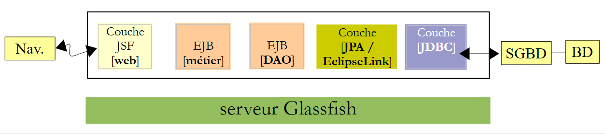 |
- 以及 JSF / Spring / JPA Hibernate / Tomcat 服务器版本：
 |
3.2. 应用程序的使用方法
我们将该应用程序命名为 [RdvMedecins]。以下是其运行界面的截图。
该应用程序的首页如下所示：
 |
从该首页开始，用户（秘书处、医生）将执行一系列操作。具体操作如下所示。左侧视图展示了用户发起请求时的界面，右侧视图则展示了服务器返回的响应。
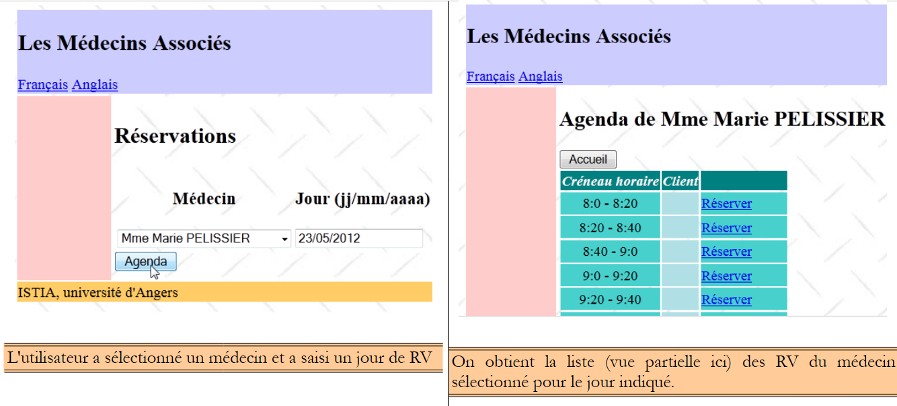 |
 |
 |
 |
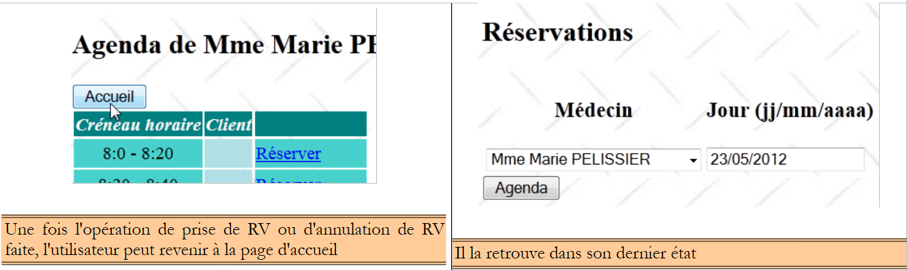 |
 |
最后，还可能出现错误页面：
 |
3.3. 数据库
让我们回到待构建应用程序的架构：
 |
我们将该数据库命名为 [dbrdvmedecins2] ，它是一个包含四个表的 MySQL5 数据库：
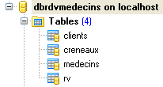 |
3.3.1. 表 [MEDECINS]
该表包含由应用程序管理的医生信息[RdvMedecins]。
 |  |
- ID：医生标识号——该表的主键
- VERSION：表中该行的版本标识号。每次对该行进行修改时，该数字都会增加1。
- NOM：医生姓名
- PRENOM：其名字
- TITRE：其称谓（小姐、女士、先生）
3.3.2. 表 [CLIENTS]
各医生的患者信息存储在表 [CLIENTS] 中：
 |  |
- ID：客户标识号——该表的主键
- VERSION：标识表中该行版本的编号。每次对该行进行修改时，该数字都会递增1。
- NOM：客户姓名
- PRENOM：客户名字
- TITRE：其称谓（小姐、女士、先生）
3.3.3. 表 [CRENEAUX]
该表列出了可进行 RV 操作的时间段：
 |
 |
- ID：时间段标识号——该表的主键（第8行）
- VERSION：表中该行的版本标识号。每次对该行进行修改时，该数字会递增1。
- ID_MEDECIN：标识该时段所属医生的编号——MEDECINS(ID)列的外键。
- HDEBUT：时段开始时间
- MDEBUT：时段开始分钟
- HFIN：时段结束时间
- MFIN：时段结束分钟
例如，表格 [CRENEAUX]（参见上文 [1]）的第二行显示，第 2 号时段于 8 点 20 分开始，8 点 40 分结束，归属于第 1 号医生 （玛丽女士 PELISSIER）。
3.3.4. 表 [RV]
该表列出了每位医生所分配的 RV：
 |
- ID：唯一标识RV的编号——主键
- JOUR：RV的日期
- ID_CRENEAU：RV的时间段——作为外键关联至[CRENEAUX]表中的[ID]字段——同时确定了时间段和相关医生。
- ID_CLIENT：预订对象的客户编号——作为表[CLIENTS]中字段[ID]的外键
该表的 对关联列（JOUR、ID_CRENEAU）的值施加了唯一性约束：
如果表[RV]中某行具有值 (JOUR1, ID_CRENEAU1) 作为列 (JOUR, ID_CRENEAU) 的值，则该值在其他任何地方都不能出现。 否则，这意味着同一时间针对同一位医生生成了两个 RV。从 Java 编程的角度来看，当这种情况发生时，数据库中的 JDBC 驱动程序会触发一个 SQLException。
id 行值为 3（参见上文的 [1]），表示 2006 年 8 月 23 日第 20 个时段的第 4 号客户已预约了 RV。 [CRENEAUX]表显示，第20号时段对应16:20-16:40的时间段，由第1号医生（Marie PELISSIER女士）负责。 表[CLIENTS]显示，第4号客户是布里吉特·BISTROU小姐。
3.3.5. 数据库生成
要创建并填充这些表，可以使用示例网站上的脚本 [dbrdvmedecins2.sql]。结合 [WampServer]（参见第 1.3.3 节），操作步骤如下：
 |
- 在 [1] 中，点击 [WampServer] 图标，并选择 [PhpMyAdmin] [2] 选项，
- 在 [3] 中，在弹出的窗口中，选择链接 [Bases de données]，
 |
- 转为 [2]，创建一个数据库，将其命名为 [4]，编码设为 [5]，
- 在 [7] 中，数据库已创建。点击其链接，
 |
- 在 [8] 中，导入一个文件 SQL，
- 通过按钮在文件系统中指定该文件：[9]，
 |
- 在 [11] 中，选择脚本 SQL，并在 [12] 中执行它，
- 在 [13] 中，数据库的四个表已创建完成。点击其中一个链接，
 |
- 在 [14] 中，显示了表的内容。
此后，我们将不再提及该数据库。但欢迎读者通过程序的执行过程关注其演变，尤其是在程序无法正常运行时。
3.4. [DAO] 和 [JPA] 层
让我们回到需要构建的架构：
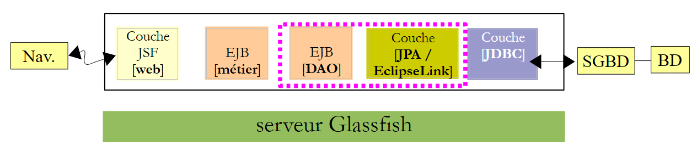 |
我们将构建四个 Maven 项目：
- 一个用于 [DAO] 和 [JPA] 层的项目，
- 一个用于 [métier] 层的项目，
- 一个用于 [web] 层的项目，
- 一个企业项目，用于整合前三个项目。
现在我们开始构建 [DAO] 和 [JPA] 层级的 Maven 项目。
注：理解 [métier]、[DAO]、[JPA] 层需要具备 Java EE 的相关知识。 为此，可参阅 [ref7]（参见第 3 段）。
3.4.1. NetBeans 项目
具体如下：
 |
- 在 [1] 中，构建一个 [EJB Module] 类型的 Maven 项目 [2]，
- 在 [3] 中，为项目命名，
 |
- 在 [4] 中，选择 Glassfish 作为服务器，
- 在 [5] 中，生成的项目。
3.4.2. 生成 [JPA] 层
让我们回到需要构建的架构：
 |
借助 NetBeans，可以自动生成 [JPA] 层以及 [EJB] 层，后者负责控制对生成的 JPA 实体的访问。 了解这些自动生成方法很有意义，因为生成的代码为编写 JPA 实体或使用这些实体的 EJB 代码提供了宝贵的参考。
接下来我们将介绍其中一些自动生成工具。 要理解生成的代码，必须对 JPA、[ref8] 以及 EJB、[ref7] 实体有充分的了解（参见第 3 段）。
3.4.2.1. 创建 NetBeans 与数据库的连接
- 运行 SGBD 和 MySQL 5，以便 BD 可用，
- 在 [dbrdvmedecins2] 数据库上创建 NetBeans 连接，
 |
- 在 [Services] [1] 选项卡中， 在分支 [Databases] [2] 中，选择驱动程序 JDBC MySQL [3]，
- 然后选择选项 [4] “Connect Using”，用于建立与数据库 MySQL 的连接，
- 在 [5] 处，输入所需的信息。在 [6] 处输入数据库名称，在 [7] 处输入数据库用户名及其密码，
- 在 [8] 中，可验证所提供的信息，
- 在 [9] 中，若信息正确，将显示预期消息，
 |
- 在 [10] 中，连接已建立。可以看到所连接数据库中的四个表。
3.4.2.2. 创建持久化单元
让我们回到正在构建的架构：
 |
我们正在构建 [JPA] 层。该层的配置在 [persistence.xml] 文件中完成，其中定义了持久化单元。每个单元都需要以下信息：
- 数据库访问参数（JDBC，包括URL、用户名、密码），
- 将作为数据库表映射的类，
- 所使用的实现 JPA。实际上，JPA 是一项由多种产品实现的规范。 在此，我们将使用 EclipseLink，这是 Glassfish 服务器默认采用的实现。这样可以避免向 Glassfish 添加其他实现的库。
NetBeans可以通过向导生成此持久化文件。
 |
- 右键单击项目，选择创建持久化单元 [1]，
- 在 [2] 中，为创建的持久化单元命名，
- 在 [3] 中，选择实现 JPA EclipseLink (JPA 2.0)，
- 在 [4] 中，指定数据库事务将由 Glassfish 服务器的 EJB 容器管理，
- 在 [5] 中，指定 BD 中的表已创建，因此不再创建，
 |
- 在 [6] 中，为 Glassfish 服务器创建一个新的数据源，
- 在 [7] 中，指定名称 JNDI（Java Naming Directory Interface），
- 在 [8] 中，将该名称与上一步创建的连接 MySQL 关联，
 |
- 为 [9]，完成向导，
- 在 [10] 中，新项目，
- 在 [11] 处，文件 [persistence.xml] 已生成在文件夹 [META-INF] 中，
- 在 [12] 中，生成了一个名为 [setup] 的文件夹，
- 在 [13] 中，Maven 项目中添加了新的依赖项。
生成的 [META-INF/persistence.xml] 文件内容如下：
<?xml version="1.0" encoding="UTF-8"?>
<persistence version="2.0" xmlns="http://java.sun.com/xml/ns/persistence" xmlns:xsi="http://www.w3.org/2001/XMLSchema-instance" xsi:schemaLocation="http://java.sun.com/xml/ns/persistence http://java.sun.com/xml/ns/persistence/persistence_2_0.xsd">
<persistence-unit name="dbrdvmedecins2-PU" transaction-type="JTA">
<jta-data-source>jdbc/dbrdvmedecins2</jta-data-source>
<exclude-unlisted-classes>false</exclude-unlisted-classes>
<properties/>
</persistence-unit>
</persistence>
该文件包含向导中提供的信息：
- 第 3 行：持久化单元的名称，
- 第 3 行：数据库事务类型，此处为由 Glassfish 服务器容器 EJB3 管理的 JTA（Java Transaction API）事务，
- 第 4 行：数据源的名称 JNDI。
通常，该文件中会包含所使用的实现类型 JPA。 在向导中，我们指定了 EclipseLink。由于这是 Glassfish 服务器默认使用的 JPA 实现，因此该文件中未提及 [persistence.xml]。
在 [Design] 选项卡中，可以全面查看 [persistence.xml] 文件：
 |
要获取 EclipseLink 的日志，我们将使用以下 [persistence.xml] 文件：
<?xml version="1.0" encoding="UTF-8"?>
<persistence version="2.0" xmlns="http://java.sun.com/xml/ns/persistence" xmlns:xsi="http://www.w3.org/2001/XMLSchema-instance" xsi:schemaLocation="http://java.sun.com/xml/ns/persistence http://java.sun.com/xml/ns/persistence/persistence_2_0.xsd">
<persistence-unit name="dbrdvmedecins2-PU" transaction-type="JTA">
<provider>org.eclipse.persistence.jpa.PersistenceProvider</provider>
<jta-data-source>jdbc/dbrdvmedecins2</jta-data-source>
<exclude-unlisted-classes>false</exclude-unlisted-classes>
<properties>
<property name="eclipselink.logging.level" value="FINE"/>
</properties>
</persistence-unit>
</persistence>
- 第 4 行：指定使用 JPA 作为 EclipseLink 的实现；
- 第7-9行：汇总了提供程序JPA（此处为EclipseLink）的配置属性，
- 第8行：此属性用于记录EclipseLink将发出的SQL命令。
生成的文件 [glassfish-resources.xml] 如下：
<?xml version="1.0" encoding="UTF-8"?>
<!DOCTYPE resources PUBLIC "-//GlassFish.org//DTD GlassFish Application Server 3.1 Resource Definitions//EN" "http://glassfish.org/dtds/glassfish-resources_1_5.dtd">
<resources>
<jdbc-connection-pool allow-non-component-callers="false" ... steady-pool-size="8" validate-atmost-once-period-in-seconds="0" wrap-jdbc-objects="false">
<property name="serverName" value="localhost"/>
<property name="portNumber" value="3306"/>
<property name="databaseName" value="dbrdvmedecins2"/>
<property name="User" value="root"/>
<property name="Password" value=""/>
<property name="URL" value="jdbc:mysql://localhost:3306/dbrdvmedecins2"/>
<property name="driverClass" value="com.mysql.jdbc.Driver"/>
</jdbc-connection-pool>
<jdbc-resource enabled="true" jndi-name="jdbc/dbrdvmedecins2" object-type="user" pool-name="mysql_dbrdvmedecins2_rootPool"/>
</resources>
该文件包含我们在之前使用的两个向导中输入的信息：
- 第 5-11 行：数据库 MySQL5 的属性 JDBC [dbrdvmedecins2]，
- 第13行：数据源的名称JNDI。
该文件将用于创建 Glassfish 服务器上的数据源 JNDI [jdbc/dbrdvmedecins2]。这完全是该服务器的专有操作。对于其他服务器，则需要采用不同的方法，通常是通过管理工具。Glassfish 也有相应的管理工具。
最后，项目中已添加了依赖项。[pom.xml]文件内容如下：
<project xmlns="http://maven.apache.org/POM/4.0.0" xmlns:xsi="http://www.w3.org/2001/XMLSchema-instance"
xsi:schemaLocation="http://maven.apache.org/POM/4.0.0 http://maven.apache.org/xsd/maven-4.0.0.xsd">
<modelVersion>4.0.0</modelVersion>
<groupId>istia.st</groupId>
<artifactId>mv-rdvmedecins-ejb-dao-jpa</artifactId>
<version>1.0-SNAPSHOT</version>
<packaging>ejb</packaging>
<name>mv-rdvmedecins-ejb-dao-jpa</name>
...
<dependencies>
<dependency>
<groupId>org.eclipse.persistence</groupId>
<artifactId>eclipselink</artifactId>
<version>2.3.0</version>
<scope>provided</scope>
</dependency>
<dependency>
<groupId>org.eclipse.persistence</groupId>
<artifactId>javax.persistence</artifactId>
<version>2.0.3</version>
<scope>provided</scope>
</dependency>
<dependency>
<groupId>org.eclipse.persistence</groupId>
<artifactId>org.eclipse.persistence.jpa.modelgen.processor</artifactId>
<version>2.3.0</version>
<scope>provided</scope>
</dependency>
<dependency>
<groupId>javax</groupId>
<artifactId>javaee-api</artifactId>
<version>6.0</version>
<scope>provided</scope>
</dependency>
</dependencies>
...
<repositories>
<repository>
<url>http://download.eclipse.org/rt/eclipselink/maven.repo/</url>
<id>eclipselink</id>
<layout>default</layout>
<name>Repository for library Library[eclipselink]</name>
</repository>
</repositories>
</project>
- 第 32-37 行，[JPA] 层需要 [javaee-api] 构建产物，
- 第16、22、28行，此处使用的JPA / EclipseLink实现所需的工件。
- 第 18、24、30、36 行：所有工件都具有 provided 属性。 需要说明的是，这意味着它们仅在编译时必需，而运行时则不需要。实际上，在运行时，这些工件（provided）由 Glassfish 服务器提供，
- 第 41-48 行：定义了一个新的 Maven 工件仓库，EclipseLink 工件可在该仓库中找到。
3.4.2.3. 生成 JPA 实体
JPA 实体可通过 NetBeans 向导生成：
 |
- 在 [1] 中，从数据库创建 JPA 实体，
- 在 [2] 中，选择之前创建的数据源 [jdbc / dbrdvmedecins2]，
- 在 [3] 中，列出该数据源的表列表，
- 在 [4] 中，选中所有表，
 |
- 在 [5] 中，选定这些表，
- 在 [6] 中，为与这四个表关联的 Java 类命名，
- 以及包名 [7]，
- 在 [8] 中，JPA 将 BD 中的表行聚合到集合中。我们选择列表作为集合，
 |
- 在 [9] 中，由向导生成的 Java 类。
3.4.2.4. 生成的 JPA 实体
实体 [Medecin] 是表 [medecins] 的映射。Java 类中充斥着大量注解，导致代码乍看之下难以理解。若仅保留理解该实体作用所必需的内容，则得到以下代码：
package rdvmedecins.jpa;
...
@Entity
@Table(name = "medecins")
public class Medecin implements Serializable {
@Id
@GeneratedValue(strategy = GenerationType.IDENTITY)
@Column(name = "ID")
private Long id;
@Column(name = "TITRE")
private String titre;
@Column(name = "NOM")
private String nom;
@Column(name = "VERSION")
private int version;
@Column(name = "PRENOM")
private String prenom;
@OneToMany(cascade = CascadeType.ALL, mappedBy = "idMedecin")
private List<Creneau> creneauList;
// 构造函数
....
// 获取器和设置器
....
@Override
public int hashCode() {
...
}
@Override
public boolean equals(Object object) {
...
}
@Override
public String toString() {
...
}
}
- 第 4 行，@Entity 注解将类 [Medecin] 定义为实体 JPA、c.a.d。 一个通过 API 和 JPA 与 BD 表关联的类，
- 第 5 行，BD 表的名称，该表与实体 JPA 相关联。表中的每个字段都对应 Java 类中的一个字段，
- 第 6 行，该类实现了 Serializable 接口。这在客户端/服务器应用程序中是必要的，因为实体会在客户端和服务器之间进行序列化。
- 第10-11行：类[Medecin]的id字段对应于表[medecins]中的字段[ID]（第10行），
- 第 13-14 行：类 [Medecin] 的 titre 字段对应于表 [medecins] 中的 [TITRE] 字段（第 13 行），
- 第 16-17 行：类 [Medecin] 的“名称”字段对应于表 [medecins] 中的字段 [NOM]（第 16 行），
- 第 19-20 行：类 [Medecin] 的 version 字段对应于表 [medecins] 中的 [VERSION] 字段（第 19 行）。 在此，向导未能识别该列实际上是一个版本列，该列应在所属行每次修改时递增。为赋予其此功能，需添加 @Version 注释。我们将在后续步骤中进行此操作，
- 第22-23行：类[Medecin]中的prenom字段对应于表[medecins]中的[PRENOM]字段，
- 第 10-11 行：id 字段对应于该表的主键 [ID]。第 8-9 行的注解对此进行了说明，
- 第 8 行：注解 @Id 表示被注解的字段与表的主键相关联，
- 第 9 行：[JPA] 层将为插入到 [Medecins] 表中的行生成主键。 有多种策略可供选择。此处策略 GenerationType.IDENTITY 表示，层 JPA 将使用表 MySQL 的模式 auto_increment，
- 第25-26行：表[creneaux]对表[medecins]设置了外键。一个时段属于一位医生。反之，一位医生则关联有多个时段。 因此，这是一种“一对多”关系（一名医生对应多个时段），该关系由注释 @OneToMany 通过 JPA 进行限定（第25行）。 第26行的字段将包含该医生的所有时段。这无需编程即可实现。为了完全理解第25行，我们需要介绍类[Creneau]。
该类定义如下：
package rdvmedecins.jpa;
import java.io.Serializable;
import java.util.List;
import javax.persistence.*;
import javax.validation.constraints.NotNull;
@Entity
@Table(name = "creneaux")
public class Creneau implements Serializable {
@Id
@GeneratedValue(strategy = GenerationType.IDENTITY)
@Column(name = "ID")
private Long id;
@Column(name = "MDEBUT")
private int mdebut;
@Column(name = "HFIN")
private int hfin;
@Column(name = "HDEBUT")
private int hdebut;
@Column(name = "MFIN")
private int mfin;
@Column(name = "VERSION")
private int version;
@JoinColumn(name = "ID_MEDECIN", referencedColumnName = "ID")
@ManyToOne(optional = false)
private Medecin idMedecin;
@OneToMany(cascade = CascadeType.ALL, mappedBy = "idCreneau")
private List<Rv> rvList;
// 构造函数
...
// getter 和 setter
...
@Override
public int hashCode() {
...
}
@Override
public boolean equals(Object object) {
...
}
@Override
public String toString() {
...
}
}
我们仅对新注释进行说明：
- 我们曾提到，表 [creneaux] 拥有指向表 [medecins] 的外键：一个时段与一位医生相关联。多位医生可以关联多个时段。 表 [creneaux] 与表 [medecins] 之间存在一种关系，该关系被定义为多对一（多个时段对应一名医生）。 第32行的注释@ManyToOne用于定义外键，
- 第31行带有注释@JoinColumn，用于明确外键关系： 表 [creneaux] 的 [ID_MEDECIN] 列是表 [medecins] 的 [ID] 列的外键，
- 第 33 行：指向该时段所属医生的引用。此处同样无需编程即可获取。
因此，实体 [Creneau] 与实体 [Medecin] 之间的外键关系通过以下两条注释体现：
- 在实体 [Creneau] 中：
@JoinColumn(name = "ID_MEDECIN", referencedColumnName = "ID")
@ManyToOne(optional = false)
private Medecin idMedecin;
- 在实体 [Medecin] 中：
@OneToMany(cascade = CascadeType.ALL, mappedBy = "idMedecin")
private List<Creneau> creneauList;
这两个注释反映了相同的关系：即表 [creneaux] 到表 [medecins] 的外键关系。我们说它们是彼此的逆关系。 只有关系 @ManyToOne 是必不可少的。它明确地定义了外键关系。关系 @OneToMany 是可选的。如果存在，它仅引用与其关联的关系 @ManyToOne。 这就是实体 [Medecin] 第 1 行中 mappedBy 属性的含义。 该属性的值是实体 [Creneau] 中带有注释 @ManyToOne 的字段名称，该注释指定了外键。同样在实体 [Medecin] 的第 1 行中， 属性 cascade=CascadeType.ALL 确定了实体 [Medecin] 相对于实体 [Creneau] 的行为：
- 如果向数据库中插入一个新的实体 [Medecin]，则第 2 行字段中的实体 [Creneau] 也必须被插入，
- 如果修改数据库中的实体 [Medecin]，则第 2 行字段中的实体 [Creneau] 也必须被修改，
- 如果从数据库中删除实体 [Medecin]，则第 2 行字段中的实体 [Creneau] 也必须被删除。
由于另外两个实体的代码未引入新的标记，因此在此不作特别说明。
实体 [Client]
package rdvmedecins.jpa;
...
@Entity
@Table(name = "clients")
public class Client implements Serializable {
@Id
@GeneratedValue(strategy = GenerationType.IDENTITY)
@Column(name = "ID")
private Long id;
@Column(name = "TITRE")
private String titre;
@Column(name = "NOM")
private String nom;
@Column(name = "VERSION")
private int version;
@Column(name = "PRENOM")
private String prenom;
@OneToMany(cascade = CascadeType.ALL, mappedBy = "idClient")
private List<Rv> rvList;
// 构造函数
...
// getter 和 setter
...
@Override
public int hashCode() {
...
}
@Override
public boolean equals(Object object) {
...
}
@Override
public String toString() {
...
}
}
- 第24-25行反映了表[rv]与表[clients]之间的外键关系。
实体 [Rv]：
package rdvmedecins.jpa;
...
@Entity
@Table(name = "rv")
public class Rv implements Serializable {
@Id
@GeneratedValue(strategy = GenerationType.IDENTITY)
@Column(name = "ID")
private Long id;
@Column(name = "JOUR")
@Temporal(TemporalType.DATE)
private Date jour;
@JoinColumn(name = "ID_CRENEAU", referencedColumnName = "ID")
@ManyToOne(optional = false)
private Creneau idCreneau;
@JoinColumn(name = "ID_CLIENT", referencedColumnName = "ID")
@ManyToOne(optional = false)
private Client idClient;
// 构造函数
...
// getter 和 setter
...
@Override
public int hashCode() {
...
}
@Override
public boolean equals(Object object) {
...
}
@Override
public String toString() {
...
}
}
- 第13行定义了Java类型的“日”字段Date。说明在表[rv]中，列[JOUR]（第12行）的类型为日期（不含时间），
- 第16-18行：定义了表[rv]与表[creneaux]之间的外键关系，
- 第20-22行：定义了表[rv]与表[clients]之间的外键关系。
通过自动生成实体 JPA，我们可以获得一个工作基础。有时这已足够，有时则不然。本例即属后者：
- 需要为各实体的版本字段添加 @Version 注解，
- 需要编写比生成的方法更明确的 toString 方法，
- 实体 [Medecin] 和 [Client] 性质相似。我们将让它们继承自类 [Personne]，
- 并将删除 @OneToMany 关系（作为 @ManyToOne 关系的反向关系）。这些关系并非必需，且会增加编程复杂度，
- 我们将移除 @NotNull 对主键的验证。当将实体 JPA 与 MySQL 进行持久化时，原始实体的主键为 null。 只有在数据写入数据库后，被持久化的元素的主键才会获得具体值。
根据这些规范，各类定义如下：
Personne 类用于表示医生和客户：
package rdvmedecins.jpa;
import java.io.Serializable;
import javax.persistence.*;
import javax.validation.constraints.NotNull;
import javax.validation.constraints.Size;
@MappedSuperclass
public class Personne implements Serializable {
private static final long serialVersionUID = 1L;
@Id
@GeneratedValue(strategy = GenerationType.IDENTITY)
@Column(name = "ID")
private Long id;
@Basic(optional = false)
@Size(min = 1, max = 5)
@Column(name = "TITRE")
private String titre;
@Basic(optional = false)
@NotNull
@Size(min = 1, max = 30)
@Column(name = "NOM")
private String nom;
@Basic(optional = false)
@NotNull
@Column(name = "VERSION")
@Version
private int version;
@Basic(optional = false)
@NotNull
@Size(min = 1, max = 30)
@Column(name = "PRENOM")
private String prenom;
// 构造函数
...
// getter 和 setter
...
@Override
public String toString() {
return String.format("[%s,%s,%s,%s,%s]", id, version, titre, prenom, nom);
}
}
- 第 8 行：请注意，类 [Personne] 本身并非实体（@Entity）。它将作为实体的父类。注解 @MappedSuperClass 指明了这种情况。
实体 [Client] 封装了表 [clients] 的行。它继承自前面的类 [Personne]：
package rdvmedecins.jpa;
import java.io.Serializable;
import javax.persistence.*;
@Entity
@Table(name = "clients")
public class Client extends Personne implements Serializable {
private static final long serialVersionUID = 1L;
// 构造函数
...
@Override
public int hashCode() {
...
}
@Override
public boolean equals(Object object) {
...
}
@Override
public String toString() {
return String.format("Client[%s,%s,%s,%s]", getId(), getTitre(), getPrenom(), getNom());
}
}
- 第 6 行：类 [Client] 是一个 JPA 实体，
- 第 7 行：它与表 [clients] 相关联，
- 第 8 行：它继承自类 [Personne]。
封装表 [medecins] 行数据的实体 [Medecin] 遵循相同的模式：
package rdvmedecins.jpa;
import java.io.Serializable;
import javax.persistence.*;
@Entity
@Table(name = "medecins")
public class Medecin extends Personne implements Serializable {
private static final long serialVersionUID = 1L;
// 构造函数
...
@Override
public int hashCode() {
...
}
@Override
public boolean equals(Object object) {
...
}
@Override
public String toString() {
return String.format("Médecin[%s,%s,%s,%s]", getId(), getTitre(), getPrenom(), getNom());
}
}
实体 [Creneau] 封装了表 [creneaux] 的行：
package rdvmedecins.jpa;
import java.io.Serializable;
import java.util.List;
import javax.persistence.*;
import javax.validation.constraints.NotNull;
@Entity
@Table(name = "creneaux")
public class Creneau implements Serializable {
private static final long serialVersionUID = 1L;
@Id
@GeneratedValue(strategy = GenerationType.IDENTITY)
@Basic(optional = false)
@Column(name = "ID")
private Long id;
@Basic(optional = false)
@NotNull
@Column(name = "MDEBUT")
private int mdebut;
@Basic(optional = false)
@NotNull
@Column(name = "HFIN")
private int hfin;
@Basic(optional = false)
@NotNull
@Column(name = "HDEBUT")
private int hdebut;
@Basic(optional = false)
@NotNull
@Column(name = "MFIN")
private int mfin;
@Basic(optional = false)
@NotNull
@Column(name = "VERSION")
@Version
private int version;
@JoinColumn(name = "ID_MEDECIN", referencedColumnName = "ID")
@ManyToOne(optional = false)
private Medecin medecin;
// 构造函数
...
// getter 和 setter
...
@Override
public int hashCode() {
...
}
@Override
public boolean equals(Object object) {
// TODO：警告——如果 id 字段未设置，此方法将无法工作
...
}
@Override
public String toString() {
return String.format("Creneau [%s, %s, %s:%s, %s:%s,%s]", id, version, hdebut, mdebut, hfin, mfin, medecin);
}
}
- 第 45-47 行建模了数据库中表 [creneaux] 与表 [medecins] 之间存在的“多对一”关系：一名医生拥有多个时段，而一个时段仅属于一名医生。
实体 [Rv] 封装了表 [rv] 的行：
package rdvmedecins.jpa;
import java.io.Serializable;
import java.util.Date;
import javax.persistence.*;
import javax.validation.constraints.NotNull;
@Entity
@Table(name = "rv")
public class Rv implements Serializable {
private static final long serialVersionUID = 1L;
@Id
@GeneratedValue(strategy = GenerationType.IDENTITY)
@Basic(optional = false)
@Column(name = "ID")
private Long id;
@Basic(optional = false)
@NotNull
@Column(name = "JOUR")
@Temporal(TemporalType.DATE)
private Date jour;
@JoinColumn(name = "ID_CRENEAU", referencedColumnName = "ID")
@ManyToOne(optional = false)
private Creneau creneau;
@JoinColumn(name = "ID_CLIENT", referencedColumnName = "ID")
@ManyToOne(optional = false)
private Client client;
// 构造函数
...
// getter 和 setter
...
@Override
public int hashCode() {
...
}
@Override
public boolean equals(Object object) {
...
}
@Override
public String toString() {
return String.format("Rv[%s, %s, %s]", id, creneau, client);
}
}
- 第29-31行建模了[rv]表与[clients]表之间存在的“多对一”关系 （一个客户可能出现在多个 Rv 中），而第 25-27 行则描述了 [rv] 表与 [creneaux] 表之间存在的“多对一”关系（一个时段可能出现在多个 Rv 中）。
3.4.3. 异常类
 |
该应用程序的异常类 [RdvMedecinsException] 如下所示：
package rdvmedecins.exceptions;
import java.io.Serializable;
import javax.ejb.ApplicationException;
@ApplicationException(rollback=true)
public class RdvMedecinsException extends RuntimeException implements Serializable{
// 私有字段
private int code = 0;
// 构造函数
public RdvMedecinsException() {
super();
}
public RdvMedecinsException(String message) {
super(message);
}
public RdvMedecinsException(String message, Throwable cause) {
super(message, cause);
}
public RdvMedecinsException(Throwable cause) {
super(cause);
}
public RdvMedecinsException(String message, int code) {
super(message);
setCode(code);
}
public RdvMedecinsException(Throwable cause, int code) {
super(cause);
setCode(code);
}
public RdvMedecinsException(String message, Throwable cause, int code) {
super(message, cause);
setCode(code);
}
// 获取器和设置器
public int getCode() {
return code;
}
public void setCode(int code) {
this.code = code;
}
}
- 第 7 行：该类继承自 [RuntimeException] 类。因此编译器不会强制要求使用 try/catch 进行处理。
- 第 6 行：注解 @ApplicationException 确保该异常不会被 [EjbException] 类型的异常“吞噬”。
要理解 @ApplicationException 注解，让我们回顾一下服务器端使用的架构：
 |
类型为 [RdvMedecinsException] 的异常将由 [DAO] 层中的 EJB 方法在 EJB3 容器内部抛出，并由该容器进行拦截。 如果没有 @ApplicationException 注解，容器 EJB3 会将发生的异常封装为类型为 [EjbException] 的异常，并重新抛出该异常。 若不希望进行此封装，可让 EJB3 容器抛出类型为 [RdvMedecinsException] 的异常。这正是 @ApplicationException 注解所实现的功能。 此外，该注解的 (rollback=true) 属性告知容器 EJB3：若在包含 SGBD 的事务中执行的方法内部发生了类型为 [RdvMedecinsException] 的异常， 则该事务必须被回滚。从技术角度讲，这被称为对事务执行rollback操作。
3.4.4. [DAO] 层的 EJB
 |
 |
[IDao] 层（ ）的 Java 接口 [DAO] 如下：
package rdvmedecins.dao;
import java.util.Date;
import java.util.List;
import rdvmedecins.jpa.Client;
import rdvmedecins.jpa.Creneau;
import rdvmedecins.jpa.Medecin;
import rdvmedecins.jpa.Rv;
public interface IDao {
// 客户列表
public List<Client> getAllClients();
// 医生列表
public List<Medecin> getAllMedecins();
// 医生时段列表
public List<Creneau> getAllCreneaux(Medecin medecin);
// 某医生在特定日期的预约列表
public List<Rv> getRvMedecinJour(Medecin medecin, Date jour);
// 按ID查找客户
public Client getClientById(Long id);
// 按ID查找客户
public Medecin getMedecinById(Long id);
// 按ID查找预约
public Rv getRvById(Long id);
// 根据ID查找时间段
public Creneau getCreneauById(Long id);
// 添加一个 RV
public Rv ajouterRv(Date jour, Creneau creneau, Client client);
// 删除一个 RV
public void supprimerRv(Rv rv);
}
该接口是在确定 [web] 层的需求后构建的：
- 第 14 行：客户列表。我们需要它来填充客户下拉列表，
- 第16行：医生列表。我们需要它来填充医生的下拉列表，
- 第18行：医生的预约时段列表。我们将需要它来显示医生在特定日期的日程安排，
- 第20行：某位医生在特定日期内的预约列表。结合前面的方法，我们可以显示该医生在特定日期内的日程表，其中包含已预订的时间段，
- 第22行：支持通过客户编号查询客户。该方法允许我们通过客户下拉列表中的选择来查找客户，
- 第24行：医生操作同上，
- 第26行：通过编号查找预约。在删除预约前，可用于验证该预约是否确实存在，
- 第28行：根据时段编号查找特定时段。用于识别用户想要添加或删除的时段，
- 第30行：用于添加预约，
- 第32行：用于删除预约。
[IDaoLocal] 的本地接口仅继承了之前的 [IDao] 接口：
package rdvmedecins.dao;
import javax.ejb.Local;
@Local
public interface IDaoLocal extends IDao{
}
远程接口 [IDaoRemote] 也是如此：
package rdvmedecins.dao;
import javax.ejb.Remote;
@Remote
public interface IDaoRemote extends IDao{
}
EJB 实现了本地和远程这两个接口：
package rdvmedecins.dao;
...
@Singleton (mappedName="rdvmedecins.dao")
@TransactionAttribute(TransactionAttributeType.REQUIRED)
public class DaoJpa implements IDaoLocal, IDaoRemote, Serializable {
- 第 5 行表明远程 EJB 的名称为 "rdvmedecins.dao"。 此外，@Singleton 注解（Java EE6）确保只会创建一个 EJB 实例。 @Stateless注解（Java EE5）定义了一个EJB，该类可创建多个实例以供EJB池使用，
- 第 6 行表明 EJB 的所有方法都在由容器 EJB3 管理的交易中执行，
- 第 7 行显示 EJB 实现了本地和远程接口，并且也是可序列化的。
EJB 的完整代码如下：
package rdvmedecins.dao;
import java.io.Serializable;
import java.util.Date;
import java.util.List;
import javax.ejb.Singleton;
import javax.ejb.TransactionAttribute;
import javax.ejb.TransactionAttributeType;
import javax.persistence.EntityManager;
import javax.persistence.PersistenceContext;
import rdvmedecins.exceptions.RdvMedecinsException;
import rdvmedecins.jpa.Client;
import rdvmedecins.jpa.Creneau;
import rdvmedecins.jpa.Medecin;
import rdvmedecins.jpa.Rv;
@Singleton (mappedName="rdvmedecins.dao")
@TransactionAttribute(TransactionAttributeType.REQUIRED)
public class DaoJpa implements IDaoLocal, IDaoRemote, Serializable {
@PersistenceContext
private EntityManager em;
// 客户列表
public List<Client> getAllClients() {
try {
return em.createQuery("select rc from Client rc").getResultList();
} catch (Throwable th) {
throw new RdvMedecinsException(th, 1);
}
}
// 医生列表
public List<Medecin> getAllMedecins() {
try {
return em.createQuery("select rm from Medecin rm").getResultList();
} catch (Throwable th) {
throw new RdvMedecinsException(th, 2);
}
}
// 特定医生的预约时段列表
// 医生：该医生
public List<Creneau> getAllCreneaux(Medecin medecin) {
try {
return em.createQuery("select rc from Creneau rc join rc.medecin m where m.id=:idMedecin").setParameter("idMedecin", medecin.getId()).getResultList();
} catch (Throwable th) {
throw new RdvMedecinsException(th, 3);
}
}
// 特定医生在特定日期的预约列表
// 医生：该医生
// 日期：该日期
public List<Rv> getRvMedecinJour(Medecin medecin, Date jour) {
try {
return em.createQuery("select rv from Rv rv join rv.creneau c join c.idMedecin m where m.id=:idMedecin and rv.jour=:jour").setParameter("idMedecin", medecin.getId()).setParameter("jour", jour).getResultList();
} catch (Throwable th) {
throw new RdvMedecinsException(th, 3);
}
}
// 添加预约
// 日期：预约日期
// 时段：预约的时间段
// 客户：预约对象
public Rv ajouterRv(Date jour, Creneau creneau, Client client) {
try {
Rv rv = new Rv(null, jour);
rv.setClient(client);
rv.setCreneau(creneau);
em.persist(rv);
return rv;
} catch (Throwable th) {
throw new RdvMedecinsException(th, 4);
}
}
// 删除预约
// rv：被删除的预约
public void supprimerRv(Rv rv) {
try {
em.remove(em.merge(rv));
} catch (Throwable th) {
throw new RdvMedecinsException(th, 5);
}
}
// 检索指定客户
public Client getClientById(Long id) {
try {
return (Client) em.find(Client.class, id);
} catch (Throwable th) {
throw new RdvMedecinsException(th, 6);
}
}
// 检索指定医生
public Medecin getMedecinById(Long id) {
try {
return (Medecin) em.find(Medecin.class, id);
} catch (Throwable th) {
throw new RdvMedecinsException(th, 6);
}
}
// 查询指定预约
public Rv getRvById(Long id) {
try {
return (Rv) em.find(Rv.class, id);
} catch (Throwable th) {
throw new RdvMedecinsException(th, 6);
}
}
// 检索指定时段
public Creneau getCreneauById(Long id) {
try {
return (Creneau) em.find(Creneau.class, id);
} catch (Throwable th) {
throw new RdvMedecinsException(th, 6);
}
}
}
- 第 22 行：EntityManager 对象负责管理对持久化上下文的访问。 在类实例化时，该字段将由容器 EJB 通过第 21 行的 @PersistenceContext 注解进行初始化，
- 第27行：JPQL查询（Java持久化查询语言），该查询将表[clients]中的所有行以[Client]对象列表的形式返回，
- 第36行：针对医生的类似查询，
- 第46行：一个名为JPQL的查询，用于对表[creneaux]和[medecins]进行连接。该查询通过医生的ID进行参数化，
- 第57行：查询JPQL，对表[rv]、[creneaux]和[medecins]进行连接，并包含两个参数：医生ID和预约日期，
- 第69-73行：创建预约并将其保存至数据库，
- 第83行：从数据库中删除一个预约，
- 第92行：在数据库中执行select查询以查找指定客户，
- 第101行：对医生执行相同操作，
- 第110行：对预约执行相同操作，
- 第119行：对时间段执行相同操作，
- 所有使用第22行持久化上下文em的操作都可能遇到数据库问题。因此，这些操作均被try/catch语句包围。可能出现的异常被封装在自定义异常RdvMedecinsException中。
3.4.5. 从 MySQL 部署 JDBC 驱动程序
在以下架构中：
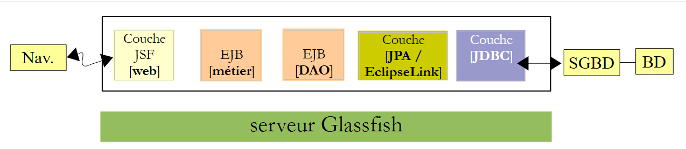 |
EclipseLink 需要 MySQL 的驱动程序 JDBC。 需将该驱动程序安装到 Glassfish 服务器的库目录中，路径为 <glassfish> /domains /domain1 /lib /ext，其中 <glassfish> 是 Glassfish 服务器的安装目录。可通过以下方式获取该驱动程序：
 |
JDBC（源自MySQL）驱动程序的安装路径为：<Domains folder>[1]/domain1/lib/ext [2]。 该驱动程序可在 URL [http://www.mysql.fr/downloads/connector/j/] 中获取。安装完成后，需重启 Glassfish 服务器，以便其加载该新库。
3.4.6. 部署 EJB 层（基于 [DAO]）
让我们回顾一下目前构建的架构：
 |
[web, métier, DAO, JPA] 组件需部署到 Glassfish 服务器上。操作步骤如下：
 |
- 生成 [1]，构建 Maven 项目，
- 在 [2] 中，我们运行它，
- 在 [3] 中，该项目已部署到 Glassfish 服务器（[Services] 选项卡）
我们可能会好奇地查看 Glassfish 的日志：
 |
在 [1] 中，Glassfish 日志可在 [Output / Glassfish Server 3+] 选项卡中查看。具体内容如下：
标识为 [Config]、[Précis] 的行是 EclipseLink 的日志，标识为 [Infos] 的行来自 Glassfish。
- 第 1-12 行：EclipseLink 处理其发现的 JPA 实体，
- 第13-17行：信息表明对JPA实体的处理已正常完成，
- 第18行：EclipseLink 发出信号，
- 第19行：EclipseLink确认其正在与SGBD和MySQL通信，
- 第20-24行：EclipseLink尝试连接BD，
- 第25-28行：连接成功，
- 第29-33行：它尝试重新连接，这次特意使用了MySQL平台（第30行），
- 第 34-37 行：此操作同样成功，
- 第 38 行：确认持久化单元 [dbrdvmedecins-PU] 已成功实例化，
- 第39行：EJB和[DaoJpa]的远程和本地接口的“可移植”名称，此处“可移植”指被所有Java应用服务器EE 6所识别，
- 第 40 行：EJB 的远程和本地接口名称 [DaoJpa]，这些名称是 Glassfish 专有的。在接下来的测试中，我们将使用名称 "rdvmedecins.dao"。
第 39 行和第 40 行非常重要。在 Glassfish 上编写 EJB 的客户端时，必须了解这些内容。
3.4.7. 对 [DAO] 层中的 EJB 进行测试
现在，我们应用程序中 [DAO] 层的 EJB 已部署完毕，我们可以对其进行测试。我们将通过客户端/服务器应用程序环境进行测试：
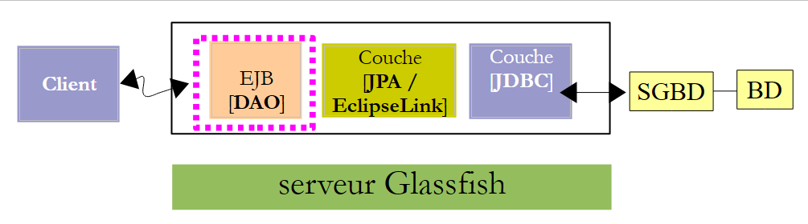 |
客户端将测试部署在 Glassfish 服务器上的 EJB [DAO] 的远程接口。
首先，我们创建一个新的 Maven 项目： ：
 |
- 在 [1] 中，我们创建了一个新项目，
- 在 [2,3] 中，我们创建一个 [Java Application] 类型的 Maven 项目，
- 在 [4] 中，为其命名并将其放置在与 EJB 和 [DAO] 相同的文件夹中，
 |
- 生成为 [5]，生成的项目
- 在 [6] 中，生成了一个名为 [App.java] 的类。我们将删除它，
- 在 [7] 中，生成了一个分支 [Source Packages]。我们之前尚未遇到过它。可以在该分支中添加测试 JUnit。我们将这样做。 我们将不保留生成的测试类 [AppTest]，
- 在 [8] 中，是 Maven 项目的依赖项。分支 [Dependencies] 目前为空。我们将需要在此添加新的依赖项。 分支 [Test Dependencies] 汇集了测试所需的依赖项。此处使用的库是 JUnit 3.8 框架的库。我们将需要对其进行更改。
该项目的演变情况如下：
 |
- 演变为 [1]，即已删除两个生成的类以及 JUnit 依赖项的项目。
让我们回到将用于测试的客户端/服务器架构：
 |
客户端需要了解 EJB 和 [DAO] 提供的远程接口。此外，它还将与 EJB 交换 JPA 实体。 因此，客户需要这些实体的定义。为了使 EJB 的测试项目能够访问这些信息，我们将 EJB 和 [DAO] 项目作为依赖项添加到该项目中：
 |
- 在 [1] 中，添加对分支 [Test Dependencies] 的依赖，
- 在 [2] 中，选择 [Open Projects] 选项卡，
- 在 [3] 中，选择 EJB 的 Maven 项目 [DAO]，
 |
- 在 [4] 中，添加了依赖项。
让我们回到测试的客户端/服务器架构：
 |
运行时，客户端和服务器通过网络进行通信 TCP-IP。我们不会编写这些通信代码。对于每个应用服务器，都有一套需要集成到客户端依赖项中的库。Glassfish 对应的库名为 [gf-client]。我们将它添加进来：
 |
- 在 [1] 中，添加一个依赖项，
- 在 [2] 中，指定所需构建成果的特性，
- 在 [3] 中，添加了大量依赖项。Maven 将下载这些依赖项。此过程可能需要几分钟。随后，它们将存储在 Maven 的本地仓库中。
现在我们可以创建测试 JUnit：
 |
- 在 [2] 中，右键单击 [Test Packages] 以创建新的测试 JUnit，
 |
- 在 [3] 中，为测试类命名并为其指定包 [4]，
- 在 [5] 中，选择框架 JUnit 4.x，
- 在 [6] 中，生成测试类，
- 在 [7] 中，Maven 项目的新依赖项。
此时文件 [pom.xml] 内容如下：
<project xmlns="http://maven.apache.org/POM/4.0.0" xmlns:xsi="http://www.w3.org/2001/XMLSchema-instance"
xsi:schemaLocation="http://maven.apache.org/POM/4.0.0 http://maven.apache.org/xsd/maven-4.0.0.xsd">
<modelVersion>4.0.0</modelVersion>
<groupId>istia.st</groupId>
<artifactId>mv-client-rdvmedecins-ejb-dao</artifactId>
<version>1.0-SNAPSHOT</version>
<packaging>jar</packaging>
<name>mv-client-rdvmedecins-ejb-dao</name>
<url>http://maven.apache.org</url>
<repositories>
<repository>
<url>http://download.eclipse.org/rt/eclipselink/maven.repo/</url>
<id>eclipselink</id>
<layout>default</layout>
<name>Repository for library Library[eclipselink]</name>
</repository>
<repository>
<url>http://repo1.maven.org/maven2/</url>
<id>junit_4</id>
<layout>default</layout>
<name>Repository for library Library[junit_4]</name>
</repository>
</repositories>
<properties>
<project.build.sourceEncoding>UTF-8</project.build.sourceEncoding>
</properties>
<dependencies>
<dependency>
<groupId>junit</groupId>
<artifactId>junit</artifactId>
<version>4.10</version>
<scope>test</scope>
</dependency>
<dependency>
<groupId>${project.groupId}</groupId>
<artifactId>mv-rdvmedecins-ejb-dao-jpa</artifactId>
<version>${project.version}</version>
<scope>test</scope>
</dependency>
<dependency>
<groupId>org.glassfish.appclient</groupId>
<artifactId>gf-client</artifactId>
<version>3.1.1</version>
<scope>test</scope>
</dependency>
</dependencies>
</project>
请注意：
- 第 32-51 行，项目依赖项，
- 第 13-26 行，定义了两个 Maven 仓库，一个用于 EclipseLink（第 14-19 行），另一个用于 JUnit4（第 20-25 行）。
测试类如下：
package rdvmedecins.tests.dao;
import java.util.Date;
import java.util.List;
import javax.naming.InitialContext;
import javax.naming.NamingException;
import junit.framework.Assert;
import org.junit.BeforeClass;
import org.junit.Test;
import rdvmedecins.dao.IDaoRemote;
import rdvmedecins.jpa.Client;
import rdvmedecins.jpa.Creneau;
import rdvmedecins.jpa.Medecin;
import rdvmedecins.jpa.Rv;
public class JUnitTestDao {
// 已测试的 [dao] 层
private static IDaoRemote dao;
// 今日日期
Date jour = new Date();
@BeforeClass
public static void init() throws NamingException {
// JNDI 环境初始化
InitialContext initialContext = new InitialContext();
// DAO层实例化
dao = (IDaoRemote) initialContext.lookup("rdvmedecins.dao");
}
@Test
public void test1() {
// 显示客户
List<Client> clients =dao.getAllClients();
display("Liste des clients :", clients);
// 显示医生
List<Medecin> medecins =dao.getAllMedecins();
display("Liste des médecins :", medecins);
// 显示医生的预约时段
Medecin medecin = medecins.get(0);
List<Creneau> creneaux = dao.getAllCreneaux(medecin);
display(String.format("Liste des créneaux du médecin %s", medecin), creneaux);
// 某医生在特定日期的预约列表
display(String.format("Liste des créneaux du médecin %s, le [%s]", medecin, jour), dao.getRvMedecinJour(medecin, jour));
// 添加 RV
Rv rv = null;
Creneau creneau = creneaux.get(2);
Client client = clients.get(0);
System.out.println(String.format("Ajout d'un Rv le [%s] dans le créneau %s pour le client %s", jour, creneau, client));
rv = dao.ajouterRv(jour, creneau, client);
System.out.println("Rv ajouté");
display(String.format("Liste des Rv du médecin %s, le [%s]", medecin, jour), dao.getRvMedecinJour(medecin, jour));
// 在同一天的同一时段添加一个 RV
// 应引发异常
System.out.println(String.format("Ajout d'un Rv le [%s] dans le créneau %s pour le client %s", jour, creneau, client));
Boolean erreur = false;
try {
rv = dao.ajouterRv(jour, creneau, client);
System.out.println("Rv ajouté");
} catch (Exception ex) {
Throwable th = ex;
while (th != null) {
System.out.println(ex.getMessage());
th = th.getCause();
}
// 记录错误
erreur=true;
}
// 验证是否发生错误
Assert.assertTrue(erreur);
// 列出 RV
display(String.format("Liste des Rv du médecin %s, le [%s]", medecin, jour), dao.getRvMedecinJour(medecin, jour));
// 删除一个 RV
System.out.println("Suppression du Rv ajouté");
dao.supprimerRv(rv);
System.out.println("Rv supprimé");
display(String.format("Liste des Rv du médecin %s, le [%s]", medecin, jour), dao.getRvMedecinJour(medecin, jour));
}
// 实用方法 - 显示集合中的元素
private static void display(String message, List elements) {
System.out.println(message);
for (Object element : elements) {
System.out.println(element);
}
}
}
- 第23-29行：标记为@BeforeClass的方法将在其他所有方法之前执行。在此，我们创建了一个指向EJB [DaoJpa]远程接口的引用。 回顾一下，我们曾将其命名为 JNDI "rdvmedecins.dao"，
- 第34-35行：显示客户列表，
- 第37-38行：显示医生列表，
- 第40-42行：显示第一位医生的时段，
- 第44行：显示第一位医生在第21行所示日期的预约，
- 第46-51行：为第一位医生添加一个预约，时间段为第2号，日期为第21行所示日期，
- 第52行：显示第21行所指日期中第一位医生的预约记录以供核对。此时至少应有一条记录，即刚刚添加的那条，
- 第55-70行：添加相同的预约。由于表[RV]具有唯一性约束，此操作应引发异常。我们在第70行确认这一点，
- 第72行：显示第21行所指日期中第一位医生的预约记录以供核对。我们原本打算添加的那个预约不应出现在此处，
- 第74-76行：删除之前添加的那个唯一的预约，
- 第 77 行：显示第 21 行所示日期中第一位医生的预约以供验证。刚刚删除的预约不应出现在此处。
此测试为虚假测试 JUnit。其中仅包含一个断言（第70行）。这属于视觉测试，存在相应的缺陷。
如果一切正常，测试应通过：
 |
- 在 [1] 中，构建测试项目，
- 在 [2] 中，执行测试，
- 在 [3] 时，测试已通过。
让我们更仔细地看看测试的显示结果：
建议读者在阅读这些日志时，同时参考生成这些日志的代码。 我们将重点关注在添加已存在的预约时发生的异常（第41-49行）。异常堆栈在第42-48行中重现。这是意料之外的。让我们回到添加预约方法的代码：
// 添加一个 Rv
// 日期：预约日期
// 时段：预约的时间段
// 客户：预约所针对的客户
public Rv ajouterRv(Date jour, Creneau creneau, Client client) {
try {
Rv rv = new Rv(null, jour);
rv.setClient(client);
rv.setCreneau(creneau);
System.out.println(String.format("avant persist : %s",rv));
em.persist(rv);
System.out.println(String.format("après persist : %s",rv));
return rv;
} catch (Throwable th) {
throw new RdvMedecinsException(th, 4);
}
}
让我们查看添加这两个约会时 Glassfish 的日志：
- 第 2 行：第一个 persist 之前，
- 第3行：第一个persist之后，
- 第4行：即将执行的INSERT命令。 需要注意的是，它并非与操作 persist 同时发生。如果是这样，该日志本应出现在第 2 行之前。因此，操作 INSERT 通常发生在执行该方法的交易结束时，
- 第6行：EclipseLink向MySQL查询最近使用的主键。它将获取新增预约的主键。该值将填充持久化实体[Rv]的id字段，
- 第7-8行：查询SELECT将显示医生的预约，
- 第 9-10 行：第二个 persist 的屏幕显示，
- 第11-12行：即将执行的INSERT命令。该命令应引发异常。该异常出现在第15-16行，且性质明确。 该异常最初由 MySQL 的驱动程序 JDBC 因违反预约唯一性约束而触发。由此推断，我们应该在 JUnit 的测试日志中看到这些异常。但实际情况并非如此：
回顾一下该测试的客户端/服务器架构：
 |
当 EJB 或 [DAO] 抛出异常时，该异常必须经过序列化才能传送到客户端。很可能正是这一操作因某种我尚未弄清的原因而失败。由于我们的完整应用程序不会采用客户端/服务器模式运行，因此我们可以忽略此问题。
既然 [DAO] 层的 EJB 已正常运行，我们可以转到 [métier] 层的 EJB。
3.5. [métier]层
让我们回到正在构建的应用程序架构：
 |
我们将为 EJB 和 [métier] 构建一个新的 Maven 项目。 如上所示，该项目将依赖于为 [DAO] 和 [JPA] 层构建的 Maven 项目。
3.5.1. NetBeans 项目
我们正在构建一个新的 EJB 类型的 Maven 项目。为此，只需按照第 174 页所述的已用流程操作即可。
 |
- 在 [1] 中，即 [métier] 层的 Maven 项目，
- 在 [2] 中，添加一个依赖项，
- 在 [3] 中，选择 [DAO] 和 [JPA] 层的 Maven 项目，
- 在 [4] 中，选择 [provided] 的作用域。需要说明的是，这意味着该项目在编译时需要该作用域，但在运行时则不需要。实际上，EJB（来自 [métier] 层）将与 [DAO] 和 [JPA] 层的 EJB 一起部署到 Glassfish 服务器上。 因此，当其运行时，来自 [DAO] 和 [JPA] 层的 EJB 已经存在，
 |
- 在 [6] 中，即包含其依赖项的新项目。
现在介绍 [métier] 层的源代码：
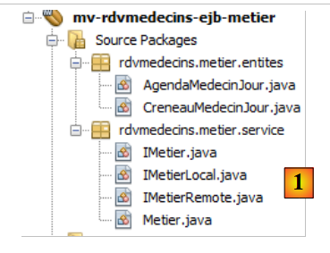 |
EJB [Metier] 将具有以下 [IMetier] 接口：
package rdvmedecins.metier.service;
import java.util.Date;
import java.util.List;
import rdvmedecins.jpa.Client;
import rdvmedecins.jpa.Creneau;
import rdvmedecins.jpa.Medecin;
import rdvmedecins.jpa.Rv;
import rdvmedecins.metier.entites.AgendaMedecinJour;
public interface IMetier {
// DAO层
// 客户列表
public List<Client> getAllClients();
// 医生列表
public List<Medecin> getAllMedecins();
// 医生时段列表
public List<Creneau> getAllCreneaux(Medecin medecin);
// 某医生在特定日期的预约列表
public List<Rv> getRvMedecinJour(Medecin medecin, Date jour);
// 按ID查找客户
public Client getClientById(Long id);
// 按ID查找客户
public Medecin getMedecinById(Long id);
// 根据ID查找预约
public Rv getRvById(Long id);
// 根据ID查找时间段
public Creneau getCreneauById(Long id);
// 添加一个 RV
public Rv ajouterRv(Date jour, Creneau creneau, Client client);
// 删除一个 RV
public void supprimerRv(Rv rv);
// 业务类型
public AgendaMedecinJour getAgendaMedecinJour(Medecin medecin, Date jour);
}
要理解该接口，需回顾项目架构：
 |
我们已定义了 [DAO] 层的接口（第 3.4.4 节），并指出该接口满足 [web] 层的需求，即用户需求。 [web]层仅通过[métier]层与[DAO]层进行通信。 这解释了为何在 [métier] 层中包含 [DAO] 层的所有方法。这些方法仅会将 [web] 层的请求委托给 [DAO] 层。 仅此而已。
在研究该应用程序时，出现了一项需求：能够在网页上显示某位医生在特定日期的日程表，以便了解该日已预约和空闲的时间段。这通常发生在秘书通过电话回应请求时。有人向她询问某天与某位医生的预约情况。 为满足这一需求，[métier]层提供了第46行的方法。
// 职业
public AgendaMedecinJour getAgendaMedecinJour(Medecin medecin, Date jour);
可能会有人问该将此方法放置在何处：
- 可以将其放置在 [DAO] 层中。然而，该方法并非真正满足数据访问需求，而是满足业务需求，
- 我们可以将其放置在[web]层中。但这并非明智之举。因为如果将[web]层更改为[Swing]层，该方法将会丢失，而实际需求依然存在。
该方法接收医生和所需预约日程的日期作为参数。它返回一个 [AgendaMedecinJour] 对象，该对象代表该医生和该日期的日程表：
package rdvmedecins.metier.entites;
import java.io.Serializable;
import java.text.SimpleDateFormat;
import java.util.Date;
import rdvmedecins.jpa.Medecin;
public class AgendaMedecinJour implements Serializable {
private static final long serialVersionUID = 1L;
// 字段
private Medecin medecin;
private Date jour;
private CreneauMedecinJour[] creneauxMedecinJour;
// 构造函数
public AgendaMedecinJour() {
}
public AgendaMedecinJour(Medecin medecin, Date jour, CreneauMedecinJour[] creneauxMedecinJour) {
this.medecin = medecin;
this.jour = jour;
this.creneauxMedecinJour = creneauxMedecinJour;
}
public String toString() {
StringBuffer str = new StringBuffer("");
for (CreneauMedecinJour cr : creneauxMedecinJour) {
str.append(" ");
str.append(cr.toString());
}
return String.format("Agenda[%s,%s,%s]", medecin, new SimpleDateFormat("dd/MM/yyyy").format(jour), str.toString());
}
// 获取器和设置器
...
}
- 第 12 行：该日程表所属的医生，
- 第13行：日程表对应的日期，
- 第14行：该医生在该日的时间段。
- 该类包含构造函数（第17、21行）以及一个适配的方法 toString（第27行）。
类 [CreneauMedecinJour]（第 14 行）如下：
package rdvmedecins.metier.entites;
import java.io.Serializable;
import rdvmedecins.jpa.Creneau;
import rdvmedecins.jpa.Rv;
public class CreneauMedecinJour implements Serializable {
private static final long serialVersionUID = 1L;
// 字段
private Creneau creneau;
private Rv rv;
// 构造函数
public CreneauMedecinJour() {
}
public CreneauMedecinJour(Creneau creneau, Rv rv) {
this.creneau=creneau;
this.rv=rv;
}
// toString
@Override
public String toString() {
return String.format("[%s %s]", creneau,rv);
}
// getter 和 setter
...
}
- 第12行：医生的一个时段，
- 第13行：关联的预约，若时段为空则为null。
由此可见，类[AgendaMedecinJour]第14行的字段creneauxMedecinJour使我们能够获取该医生的所有时段，并为每个时段提供“已预约”或“空闲”的信息。 这正是 [IMetier] 接口中新增方法 [getAgendaMedecinJour] 的目的。
我们的 EJB [Metier] 将包含一个本地接口和一个远程接口，它们仅需继承主接口 [IMetier]：
package rdvmedecins.metier.service;
import javax.ejb.Local;
@Local
public interface IMetierLocal extends IMetier{
}
package rdvmedecins.metier.service;
import javax.ejb.Remote;
@Remote
public interface IMetierRemote extends IMetier{
}
EJB 和 [Metier] 通过以下方式实现这些接口：
package rdvmedecins.metier.service;
import java.io.Serializable;
import java.util.Date;
import java.util.Hashtable;
import java.util.List;
import java.util.Map;
import javax.ejb.EJB;
import javax.ejb.Singleton;
import javax.ejb.TransactionAttribute;
import javax.ejb.TransactionAttributeType;
import rdvmedecins.dao.IDaoLocal;
import rdvmedecins.jpa.Client;
import rdvmedecins.jpa.Creneau;
import rdvmedecins.jpa.Medecin;
import rdvmedecins.jpa.Rv;
import rdvmedecins.metier.entites.AgendaMedecinJour;
import rdvmedecins.metier.entites.CreneauMedecinJour;
@Singleton
@TransactionAttribute(TransactionAttributeType.REQUIRED)
public class Metier implements IMetierLocal, IMetierRemote, Serializable {
// DAO 层
@EJB
private IDaoLocal dao;
public Metier() {
}
@Override
public List<Client> getAllClients() {
return dao.getAllClients();
}
@Override
public List<Medecin> getAllMedecins() {
return dao.getAllMedecins();
}
@Override
public List<Creneau> getAllCreneaux(Medecin medecin) {
return dao.getAllCreneaux(medecin);
}
@Override
public List<Rv> getRvMedecinJour(Medecin medecin, Date jour) {
return dao.getRvMedecinJour(medecin, jour);
}
@Override
public Client getClientById(Long id) {
return dao.getClientById(id);
}
@Override
public Medecin getMedecinById(Long id) {
return dao.getMedecinById(id);
}
@Override
public Rv getRvById(Long id) {
return dao.getRvById(id);
}
@Override
public Creneau getCreneauById(Long id) {
return dao.getCreneauById(id);
}
@Override
public Rv ajouterRv(Date jour, Creneau creneau, Client client) {
return dao.ajouterRv(jour, creneau, client);
}
@Override
public void supprimerRv(Rv rv) {
dao.supprimerRv(rv);
}
@Override
public AgendaMedecinJour getAgendaMedecinJour(Medecin medecin, Date jour) {
// 医生的时间段列表
List<Creneau> creneauxHoraires = dao.getAllCreneaux(medecin);
// 该医生同一天的预约列表
List<Rv> reservations = dao.getRvMedecinJour(medecin, jour);
// 根据已预约的就诊时间创建字典
Map<Long, Rv> hReservations = new Hashtable<Long, Rv>();
for (Rv resa : reservations) {
hReservations.put(resa.getCreneau().getId(), resa);
}
// 生成指定日期的日程表
AgendaMedecinJour agenda = new AgendaMedecinJour();
// 医生
agenda.setMedecin(medecin);
// 日期
agenda.setJour(jour);
// 预约时段
CreneauMedecinJour[] creneauxMedecinJour = new CreneauMedecinJour[creneauxHoraires.size()];
agenda.setCreneauxMedecinJour(creneauxMedecinJour);
// 填入预约时段
for (int i = 0; i < creneauxHoraires.size(); i++) {
// 日程表第 i 行
creneauxMedecinJour[i] = new CreneauMedecinJour();
// 时段ID
creneauxMedecinJour[i].setCreneau(creneauxHoraires.get(i));
// 时段是空闲还是已预订？
if (hReservations.containsKey(creneauxHoraires.get(i).getId())) {
// 时段已被占用 - 记录预订
Rv resa = hReservations.get(creneauxHoraires.get(i).getId());
creneauxMedecinJour[i].setRv(resa);
}
}
// 返回结果
return agenda;
}
}
- 第 22 行，类 [Metier] 是 EJB 的单例，
- 第 23 行，EJB 的每个方法都在事务中执行。 这意味着事务在方法开始时启动，位于 [métier] 层。该层将调用 [DAO] 层的方法。这些方法将在同一事务中执行，
- 第24行，EJB 实现了其本地和远程接口，并且是可序列化的，
- 第27行：[DAO]层对EJB的引用，
- 第29行：该引用将通过Glassfish服务器的EJB容器注入，借助@EJB注解。 因此，当 [Metier] 类的方法执行时，对 [DAO] 层中 EJB 的引用已被初始化，
- 第 33-81 行：该引用用于将对 [métier] 层的调用委托给 [DAO] 层，
- 第84行：方法getAgendaMedecinJour用于获取某位医生在特定日期的日程安排。请读者自行查阅注释。
3.5.2. [métier] 层的部署
[métier] 层依赖于 [DAO] 层。每个层均通过 EJB 进行实现。 要测试 EJB 和 [métier]，我们需要部署这两个 EJB。为此，我们需要一个企业项目。
 |
- [1]，创建一个新项目，
- 类型为Maven [2]和企业应用程序 [3]，
- 并为其命名 [4]。后缀 ear 将自动添加，
 |
- 变为 [5]，选择 Glassfish 服务器和 Java 6 EE，
- 变为 [6]，企业应用程序包含模块，通常是 EJB 模块和 Web 模块。 在此，企业应用程序将包含我们构建的两个 EJB 模块。由于这些模块已存在，因此不勾选复选框，
- 在 [7,8] 中，已创建了两个项目。[8] 是我们将要使用的企业项目。[7] 是一个我不清楚其作用的项目。 我从未使用过它，且未深入研究Maven，因此不清楚它的用途。所以我们将忽略它。
现在企业项目已创建，我们可以为其定义模块。
 |
- 在 [1] 中，创建一个新的依赖项，
- 在 [2] 中，选择 EJB [DAO] 项目，
- 在 [3] 中，声明其类型为 EJB。请勿留空类型字段，否则系统将默认使用 jar 类型，而该类型在此处并不适用，
- 在 [4] 中，使用了 [compile] 的作用域，
- 在 [5] 中，该项目及其新依赖项，
 |
- 在 [6, 7, 8] 中，重新开始以添加来自 [métier] 层级的 EJB，
- 并将其转换为 [9]，将这两个依赖项
- 生成 [10]，构建项目，
 |
- 在 [11] 中，执行该项目，
- 在 [12] 中，通过 [Services] 选项卡可见项目已部署到 Glassfish 服务器。这意味着这两个 EJB 现已存在于服务器上。
在 Glassfish 服务器的日志中，可以找到关于这两个 EJB 部署的信息：
 |
- 在 [1] 的 Glassfish 日志选项卡中。
其中包含以下日志：
- 第1-5行：已识别出JPA实体，
- 第7行：表示[dbrdvmedecins2-PU]持久化单元的构建成功，且已连接到相关的数据库，
- 第8行：EJB的远程和本地接口的便携式名称为[DaoJpa]。portable表示被所有应用服务器识别，
- 第 9 行：同上，但使用 Glassfish 专有名称，
- 第10-11行：EJB和[Metier]的情况相同。
我们将保留 EJB [Metier] 远程接口的通用名称：
java:global/istia.st_mv-rdvmedecins-metier-dao-ear_ear_1.0-SNAPSHOT/mv-rdvmedecins-ejb-metier-1.0-SNAPSHOT/Metier!rdvmedecins.metier.service.IMetierRemote
在测试[métier]层时，我们将需要它。
3.5.3. [métier] 层测试
与对 [DAO] 层所做的一样，我们将通过客户端/服务器应用程序对 [métier] 层进行测试：
 |
客户端将测试部署在 Glassfish 服务器上的 EJB [Metier] 的远程接口。
首先，我们创建一个新的 Maven 项目。为此，我们将遵循创建 [dao] 层测试项目时采用的步骤（参见第 3.4.7 节），但不包括创建 JUnit 测试。由此创建的项目如下
 |
- 在 [1] 中， 所创建的项目及其依赖关系：与EJB层中的[dao]相关，与[métier]层中的EJB相关， 以及库 [gf-client]。
至此，该项目的 [pom.xml] 文件内容如下：
<project xmlns="http://maven.apache.org/POM/4.0.0" xmlns:xsi="http://www.w3.org/2001/XMLSchema-instance"
xsi:schemaLocation="http://maven.apache.org/POM/4.0.0 http://maven.apache.org/xsd/maven-4.0.0.xsd">
<modelVersion>4.0.0</modelVersion>
<groupId>istia.st</groupId>
<artifactId>mv-client-rdvmedecins-ejb-metier</artifactId>
<version>1.0-SNAPSHOT</version>
<packaging>jar</packaging>
<name>mv-client-rdvmedecins-ejb-metier</name>
<url>http://maven.apache.org</url>
<properties>
<project.build.sourceEncoding>UTF-8</project.build.sourceEncoding>
</properties>
<dependencies>
<dependency>
<groupId>org.glassfish.appclient</groupId>
<artifactId>gf-client</artifactId>
<version>3.1.1</version>
</dependency>
<dependency>
<groupId>${project.groupId}</groupId>
<artifactId>mv-rdvmedecins-ejb-dao-jpa</artifactId>
<version>${project.version}</version>
</dependency>
<dependency>
<groupId>${project.groupId}</groupId>
<artifactId>mv-rdvmedecins-ejb-metier</artifactId>
<version>${project.version}</version>
</dependency>
</dependencies>
</project>
请确保已正确配置第 17-33 行所述的依赖项。测试将使用一个简单的控制台类：
 |
类 [ClientRdvMedecinsMetier] 的代码如下：
package istia.st.client;
import java.util.Date;
import java.util.List;
import javax.naming.InitialContext;
import rdvmedecins.jpa.Client;
import rdvmedecins.jpa.Creneau;
import rdvmedecins.jpa.Medecin;
import rdvmedecins.jpa.Rv;
import rdvmedecins.metier.entites.AgendaMedecinJour;
import rdvmedecins.metier.service.IMetierRemote;
public class ClientRdvMedecinsMetier {
// 远程接口名称 EJB [Metier]
private static String IDaoRemoteName = "java:global/istia.st_mv-rdvmedecins-metier-dao-ear_ear_1.0-SNAPSHOT/mv-rdvmedecins-ejb-metier-1.0-SNAPSHOT/Metier!rdvmedecins.metier.service.IMetierRemote";
// 当前日期
private static Date jour = new Date();
public static void main(String[] args) {
try {
// Glassfish 服务器的上下文 JNDI
InitialContext initialContext = new InitialContext();
// 远程层引用 [metier]
IMetierRemote metier = (IMetierRemote) initialContext.lookup(IDaoRemoteName);
// 客户显示
List<Client> clients = metier.getAllClients();
display("Liste des clients :", clients);
// 医生列表
List<Medecin> medecins = metier.getAllMedecins();
display("Liste des médecins :", medecins);
// 医生预约时段显示
Medecin medecin = medecins.get(0);
List<Creneau> creneaux = metier.getAllCreneaux(medecin);
display(String.format("Liste des créneaux du médecin %s", medecin), creneaux);
// 某医生在特定日期的预约列表
display(String.format("Liste des rendez-vous du médecin %s, le [%s]", medecin, jour), metier.getRvMedecinJour(medecin, jour));
// 日程表显示
AgendaMedecinJour agenda = metier.getAgendaMedecinJour(medecin, jour);
System.out.println(agenda);
// 添加 RV
Rv rv = null;
Creneau creneau = creneaux.get(2);
Client client = clients.get(0);
System.out.println(String.format("Ajout d'un Rv le [%s] dans le créneau %s pour le client %s", jour, creneau, client));
rv = metier.ajouterRv(jour, creneau, client);
System.out.println("Rv ajouté");
display(String.format("Liste des Rv du médecin %s, le [%s]", medecin, jour), metier.getRvMedecinJour(medecin, jour));
// 显示日程表
agenda = metier.getAgendaMedecinJour(medecin, jour);
System.out.println(agenda);
// 删除 RV
System.out.println("Suppression du Rv ajouté");
metier.supprimerRv(rv);
System.out.println("Rv supprimé");
display(String.format("Liste des Rv du médecin %s, le [%s]", medecin, jour), metier.getRvMedecinJour(medecin, jour));
// 显示日历
agenda = metier.getAgendaMedecinJour(medecin, jour);
System.out.println(agenda);
} catch (Throwable ex) {
System.out.println("Erreur...");
while (ex != null) {
System.out.println(String.format("%s : %s", ex.getClass().getName(), ex.getMessage()));
ex = ex.getCause();
}
}
}
// 实用方法 - 显示集合中的元素
private static void display(String message, List elements) {
System.out.println(message);
for (Object element : elements) {
System.out.println(element);
}
}
}
- 第18行：从Glassfish日志中获取了EJB [Metier]的远程接口的便携式名称，
- 第24-27行：获取了EJB [Metier]的远程接口引用，
- 第29-30行：显示客户，
- 第 32-33 行：显示医生，
- 第 35-37 行：显示医生的可用时段，
- 第 39 行：显示某医生在特定日期内的预约，
- 第41-42行：该医生在同一天的日程表，
- 第44-49行：添加预约，
- 第50行：显示该医生的预约。此时应多出一条，
- 第52-53行：显示该医生的日程表。应能看到已添加的预约，
- 第55-57行：删除刚刚添加的预约，
- 第58行：这应反映在医生的预约列表中，
- 第60-61行：并在其日程表中更新。
运行测试：
 |  |
得到的 屏幕显示如下：
Liste des clients :
Client[1,Mr,Jules,MARTIN]
Client[2,Mme,Christine,GERMAN]
Client[3,Mr,Jules,JACQUARD]
Client[4,Melle,Brigitte,BISTROU]
Liste des médecins :
Médecin[1,Mme,Marie,PELISSIER]
Médecin[2,Mr,Jacques,BROMARD]
Médecin[3,Mr,Philippe,JANDOT]
Médecin[4,Melle,Justine,JACQUEMOT]
Liste des créneaux du médecin Médecin[1,Mme,Marie,PELISSIER]
Creneau [1, 1, 8:0, 8:20,Médecin[1,Mme,Marie,PELISSIER]]
Creneau [2, 1, 8:20, 8:40,Médecin[1,Mme,Marie,PELISSIER]]
Creneau [3, 1, 8:40, 9:0,Médecin[1,Mme,Marie,PELISSIER]]
Creneau [4, 1, 9:0, 9:20,Médecin[1,Mme,Marie,PELISSIER]]
Creneau [5, 1, 9:20, 9:40,Médecin[1,Mme,Marie,PELISSIER]]
Creneau [6, 1, 9:40, 10:0,Médecin[1,Mme,Marie,PELISSIER]]
Creneau [7, 1, 10:0, 10:20,Médecin[1,Mme,Marie,PELISSIER]]
Creneau [8, 1, 10:20, 10:40,Médecin[1,Mme,Marie,PELISSIER]]
Creneau [9, 1, 10:40, 11:0,Médecin[1,Mme,Marie,PELISSIER]]
Creneau [10, 1, 11:0, 11:20,Médecin[1,Mme,Marie,PELISSIER]]
Creneau [11, 1, 11:20, 11:40,Médecin[1,Mme,Marie,PELISSIER]]
Creneau [12, 1, 11:40, 12:0,Médecin[1,Mme,Marie,PELISSIER]]
Creneau [13, 1, 14:0, 14:20,Médecin[1,Mme,Marie,PELISSIER]]
Creneau [14, 1, 14:20, 14:40,Médecin[1,Mme,Marie,PELISSIER]]
Creneau [15, 1, 14:40, 15:0,Médecin[1,Mme,Marie,PELISSIER]]
Creneau [16, 1, 15:0, 15:20,Médecin[1,Mme,Marie,PELISSIER]]
Creneau [17, 1, 15:20, 15:40,Médecin[1,Mme,Marie,PELISSIER]]
Creneau [18, 1, 15:40, 16:0,Médecin[1,Mme,Marie,PELISSIER]]
Creneau [19, 1, 16:0, 16:20,Médecin[1,Mme,Marie,PELISSIER]]
Creneau [20, 1, 16:20, 16:40,Médecin[1,Mme,Marie,PELISSIER]]
Creneau [21, 1, 16:40, 17:0,Médecin[1,Mme,Marie,PELISSIER]]
Creneau [22, 1, 17:0, 17:20,Médecin[1,Mme,Marie,PELISSIER]]
Creneau [23, 1, 17:20, 17:40,Médecin[1,Mme,Marie,PELISSIER]]
Creneau [24, 1, 17:40, 18:0,Médecin[1,Mme,Marie,PELISSIER]]
Liste des créneaux du médecin Médecin[1,Mme,Marie,PELISSIER], le [Wed May 23 16:25:26 CEST 2012]
Agenda[Médecin[1,Mme,Marie,PELISSIER],23/05/2012, [Creneau [1, 1, 8:0, 8:20,Médecin[1,Mme,Marie,PELISSIER]] null] [Creneau [2, 1, 8:20, 8:40,Médecin[1,Mme,Marie,PELISSIER]] null] [Creneau [3, 1, 8:40, 9:0,Médecin[1,Mme,Marie,PELISSIER]] null] [Creneau [4, 1, 9:0, 9:20,Médecin[1,Mme,Marie,PELISSIER]] null] [Creneau [5, 1, 9:20, 9:40,Médecin[1,Mme,Marie,PELISSIER]] null] [Creneau [6, 1, 9:40, 10:0,Médecin[1,Mme,Marie,PELISSIER]] null] [Creneau [7, 1, 10:0, 10:20,Médecin[1,Mme,Marie,PELISSIER]] null] [Creneau [8, 1, 10:20, 10:40,Médecin[1,Mme,Marie,PELISSIER]] null] [Creneau [9, 1, 10:40, 11:0,Médecin[1,Mme,Marie,PELISSIER]] null] [Creneau [10, 1, 11:0, 11:20,Médecin[1,Mme,Marie,PELISSIER]] null] [Creneau [11, 1, 11:20, 11:40,Médecin[1,Mme,Marie,PELISSIER]] null] [Creneau [12, 1, 11:40, 12:0,Médecin[1,Mme,Marie,PELISSIER]] null] [Creneau [13, 1, 14:0, 14:20,Médecin[1,Mme,Marie,PELISSIER]] null] [Creneau [14, 1, 14:20, 14:40,Médecin[1,Mme,Marie,PELISSIER]] null] [Creneau [15, 1, 14:40, 15:0,Médecin[1,Mme,Marie,PELISSIER]] null] [Creneau [16, 1, 15:0, 15:20,Médecin[1,Mme,Marie,PELISSIER]] null] [Creneau [17, 1, 15:20, 15:40,Médecin[1,Mme,Marie,PELISSIER]] null] [Creneau [18, 1, 15:40, 16:0,Médecin[1,Mme,Marie,PELISSIER]] null] [Creneau [19, 1, 16:0, 16:20,Médecin[1,Mme,Marie,PELISSIER]] null] [Creneau [20, 1, 16:20, 16:40,Médecin[1,Mme,Marie,PELISSIER]] null] [Creneau [21, 1, 16:40, 17:0,Médecin[1,Mme,Marie,PELISSIER]] null] [Creneau [22, 1, 17:0, 17:20,Médecin[1,Mme,Marie,PELISSIER]] null] [Creneau [23, 1, 17:20, 17:40,Médecin[1,Mme,Marie,PELISSIER]] null] [Creneau [24, 1, 17:40, 18:0,Médecin[1,Mme,Marie,PELISSIER]] null]]
Ajout d'un Rv le [Wed May 23 16:25:26 CEST 2012] dans le créneau Creneau [3, 1, 8:40, 9:0,Médecin[1,Mme,Marie,PELISSIER]] pour le client Client[1,Mr,Jules,MARTIN]
Rv ajouté
Liste des Rv du médecin Médecin[1,Mme,Marie,PELISSIER], le [Wed May 23 16:25:26 CEST 2012]
Rv[252, Creneau [3, 1, 8:40, 9:0,Médecin[1,Mme,Marie,PELISSIER]], Client[1,Mr,Jules,MARTIN]]
Agenda[Médecin[1,Mme,Marie,PELISSIER],23/05/2012, [Creneau [1, 1, 8:0, 8:20,Médecin[1,Mme,Marie,PELISSIER]] null] [Creneau [2, 1, 8:20, 8:40,Médecin[1,Mme,Marie,PELISSIER]] null] [Creneau [3, 1, 8:40, 9:0,Médecin[1,Mme,Marie,PELISSIER]] Rv[252, Creneau [3, 1, 8:40, 9:0,Médecin[1,Mme,Marie,PELISSIER]], Client[1,Mr,Jules,MARTIN]]] [Creneau [4, 1, 9:0, 9:20,Médecin[1,Mme,Marie,PELISSIER]] null] [Creneau [5, 1, 9:20, 9:40,Médecin[1,Mme,Marie,PELISSIER]] null] [Creneau [6, 1, 9:40, 10:0,Médecin[1,Mme,Marie,PELISSIER]] null] [Creneau [7, 1, 10:0, 10:20,Médecin[1,Mme,Marie,PELISSIER]] null] [Creneau [8, 1, 10:20, 10:40,Médecin[1,Mme,Marie,PELISSIER]] null] [Creneau [9, 1, 10:40, 11:0,Médecin[1,Mme,Marie,PELISSIER]] null] [Creneau [10, 1, 11:0, 11:20,Médecin[1,Mme,Marie,PELISSIER]] null] [Creneau [11, 1, 11:20, 11:40,Médecin[1,Mme,Marie,PELISSIER]] null] [Creneau [12, 1, 11:40, 12:0,Médecin[1,Mme,Marie,PELISSIER]] null] [Creneau [13, 1, 14:0, 14:20,Médecin[1,Mme,Marie,PELISSIER]] null] [Creneau [14, 1, 14:20, 14:40,Médecin[1,Mme,Marie,PELISSIER]] null] [Creneau [15, 1, 14:40, 15:0,Médecin[1,Mme,Marie,PELISSIER]] null] [Creneau [16, 1, 15:0, 15:20,Médecin[1,Mme,Marie,PELISSIER]] null] [Creneau [17, 1, 15:20, 15:40,Médecin[1,Mme,Marie,PELISSIER]] null] [Creneau [18, 1, 15:40, 16:0,Médecin[1,Mme,Marie,PELISSIER]] null] [Creneau [19, 1, 16:0, 16:20,Médecin[1,Mme,Marie,PELISSIER]] null] [Creneau [20, 1, 16:20, 16:40,Médecin[1,Mme,Marie,PELISSIER]] null] [Creneau [21, 1, 16:40, 17:0,Médecin[1,Mme,Marie,PELISSIER]] null] [Creneau [22, 1, 17:0, 17:20,Médecin[1,Mme,Marie,PELISSIER]] null] [Creneau [23, 1, 17:20, 17:40,Médecin[1,Mme,Marie,PELISSIER]] null] [Creneau [24, 1, 17:40, 18:0,Médecin[1,Mme,Marie,PELISSIER]] null]]
Suppression du Rv ajouté
Rv supprimé
Liste des Rv du médecin Médecin[1,Mme,Marie,PELISSIER], le [Wed May 23 16:25:26 CEST 2012]
Agenda[Médecin[1,Mme,Marie,PELISSIER],23/05/2012, [Creneau [1, 1, 8:0, 8:20,Médecin[1,Mme,Marie,PELISSIER]] null] [Creneau [2, 1, 8:20, 8:40,Médecin[1,Mme,Marie,PELISSIER]] null] [Creneau [3, 1, 8:40, 9:0,Médecin[1,Mme,Marie,PELISSIER]] null] [Creneau [4, 1, 9:0, 9:20,Médecin[1,Mme,Marie,PELISSIER]] null] [Creneau [5, 1, 9:20, 9:40,Médecin[1,Mme,Marie,PELISSIER]] null] [Creneau [6, 1, 9:40, 10:0,Médecin[1,Mme,Marie,PELISSIER]] null] [Creneau [7, 1, 10:0, 10:20,Médecin[1,Mme,Marie,PELISSIER]] null] [Creneau [8, 1, 10:20, 10:40,Médecin[1,Mme,Marie,PELISSIER]] null] [Creneau [9, 1, 10:40, 11:0,Médecin[1,Mme,Marie,PELISSIER]] null] [Creneau [10, 1, 11:0, 11:20,Médecin[1,Mme,Marie,PELISSIER]] null] [Creneau [11, 1, 11:20, 11:40,Médecin[1,Mme,Marie,PELISSIER]] null] [Creneau [12, 1, 11:40, 12:0,Médecin[1,Mme,Marie,PELISSIER]] null] [Creneau [13, 1, 14:0, 14:20,Médecin[1,Mme,Marie,PELISSIER]] null] [Creneau [14, 1, 14:20, 14:40,Médecin[1,Mme,Marie,PELISSIER]] null] [Creneau [15, 1, 14:40, 15:0,Médecin[1,Mme,Marie,PELISSIER]] null] [Creneau [16, 1, 15:0, 15:20,Médecin[1,Mme,Marie,PELISSIER]] null] [Creneau [17, 1, 15:20, 15:40,Médecin[1,Mme,Marie,PELISSIER]] null] [Creneau [18, 1, 15:40, 16:0,Médecin[1,Mme,Marie,PELISSIER]] null] [Creneau [19, 1, 16:0, 16:20,Médecin[1,Mme,Marie,PELISSIER]] null] [Creneau [20, 1, 16:20, 16:40,Médecin[1,Mme,Marie,PELISSIER]] null] [Creneau [21, 1, 16:40, 17:0,Médecin[1,Mme,Marie,PELISSIER]] null] [Creneau [22, 1, 17:0, 17:20,Médecin[1,Mme,Marie,PELISSIER]] null] [Creneau [23, 1, 17:20, 17:40,Médecin[1,Mme,Marie,PELISSIER]] null] [Creneau [24, 1, 17:40, 18:0,Médecin[1,Mme,Marie,PELISSIER]] null]]
- 第37行：PELISSIER女士的日程表，2012年5月23日。没有预留时段，
- 第39行：添加了一个约会，
- 第42行：PELISSIER女士的新日程表。现已为MARTIN先生预留了一个时段，
- 第44行：该预约已被删除，
- 第46行：PELISSIER女士的日程显示未预留任何时段。
我们现在认为 [DAO] 和 [métier] 层已投入运行。接下来我们需要使用 JSF 框架编写 [web] 层。 为此，我们将运用本文开头所掌握的知识。
3.6. [web]层
让我们回到正在构建的架构：
 |
我们将构建最后一层，即 [web] 层。
3.6.1. NetBeans 项目
我们正在构建一个 Maven 项目：
 |
- 在 [1] 中，创建一个新项目，
- 在 [2, 3] 中，创建一个 [Web Application] 类型的 Maven 项目，
- 在 [4] 中，为其命名，
 |
- 在 [5] 中，选择 Glassfish 服务器和 Java EE 6 Web，
- 在 [6] 中，创建的项目，
- 在 [7] 中，删除 [index.jsp] 页面及 [Source Packages] 中的包后，
 |
- 在 [8, 9] 中，于项目属性中添加一个框架，
- 在 [10] 中，选择 Java Server Faces，
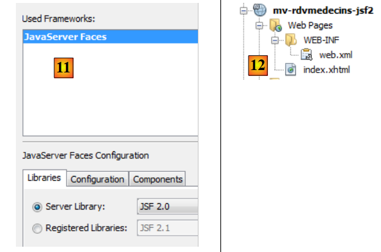 |
- 在 [11] 中，配置 Java Server Faces。保留默认值。请注意使用的是 JSF 2，
- 在 [12] 中，项目随后在两处发生变更：生成了一个 [web.xml] 文件以及一个 [index.html] 页面。
文件 [web.xml] 内容如下：
<?xml version="1.0" encoding="UTF-8"?>
<web-app version="3.0" xmlns="http://java.sun.com/xml/ns/javaee" xmlns:xsi="http://www.w3.org/2001/XMLSchema-instance" xsi:schemaLocation="http://java.sun.com/xml/ns/javaee http://java.sun.com/xml/ns/javaee/web-app_3_0.xsd">
<context-param>
<param-name>javax.faces.PROJECT_STAGE</param-name>
<param-value>Development</param-value>
</context-param>
<servlet>
<servlet-name>Faces Servlet</servlet-name>
<servlet-class>javax.faces.webapp.FacesServlet</servlet-class>
<load-on-startup>1</load-on-startup>
</servlet>
<servlet-mapping>
<servlet-name>Faces Servlet</servlet-name>
<url-pattern>/faces/*</url-pattern>
</servlet-mapping>
<session-config>
<session-timeout>
30
</session-timeout>
</session-config>
<welcome-file-list>
<welcome-file>faces/index.xhtml</welcome-file>
</welcome-file-list>
</web-app>
我们之前已经见过这个文件。
- 第 7-11 行：定义了将处理所有应用程序请求的 Servlet。即 JSF 的 Servlet，
- 第12-15行：定义了由该Servlet处理的URL。这些是形式为 /faces/* 的URL，
- 第21-23行：将页面[index.xhtml]定义为主页。
该页面如下：
<?xml version='1.0' encoding='UTF-8' ?>
<!DOCTYPE html PUBLIC "-//W3C//DTD XHTML 1.0 Transitional//EN" "http://www.w3.org/TR/xhtml1/DTD/xhtml1-transitional.dtd">
<html xmlns="http://www.w3.org/1999/xhtml"
xmlns:h="http://java.sun.com/jsf/html">
<h:head>
<title>Facelet Title</title>
</h:head>
<h:body>
Hello from Facelets
</h:body>
</html>
我们之前已经见过它。我们可以运行该项目：
 |
- 在 [1] 中，我们运行该项目，并在浏览器中获得结果 [2]。
现在我们展示完整的项目，随后将详细说明其各个组成部分。
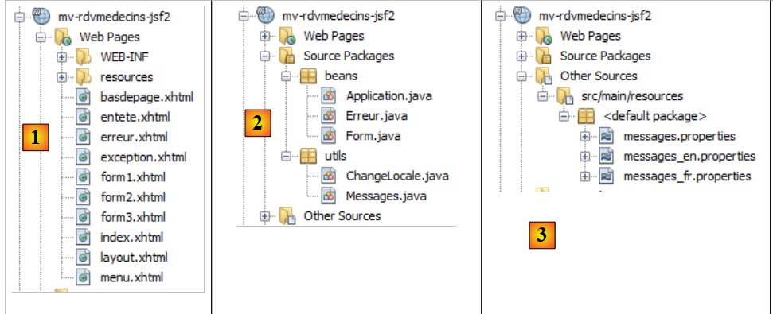 |
- 在 [1] 中，该项目的 XHTML 页面，
- 在 [2] 中，Java 代码，
- [3] 文件中包含消息文件（因为该应用程序已实现国际化），
 |
- 转换为 [4]，即项目的依赖项。
3.6.2. 项目的依赖项
让我们回到项目架构：
 |
JSF 层基于 [métier]、[DAO] 和 [JPA] 层。 这三个层被封装在我们构建的两个 Maven 项目中，这也解释了项目 [4] 的依赖关系。下面简单演示一下如何添加这些依赖：
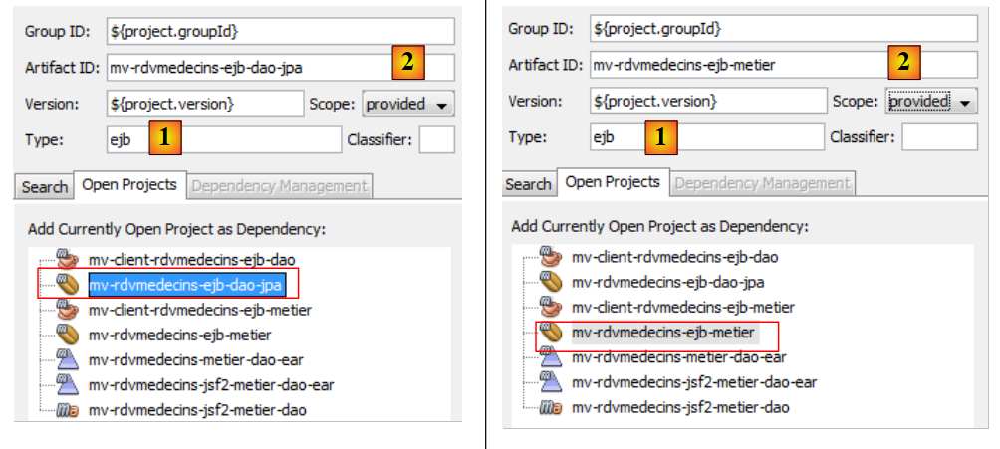 |
- 在 [1] 中，我们将使用 ejb 来表示该依赖项指向 EJB 项目，
- 在 [2] 中，我们将指定 [provided]。实际上，Web 项目将与两个 EJB 项目同时部署。 因此，它无需包含 EJB 的 JAR 文件。
3.6.3. 项目配置
该项目的配置与本文开头所探讨的 JSF 项目配置相同。我们在此列出配置文件，不再赘述。
 |  |
[web.xml]：配置 Web 应用程序。
<?xml version="1.0" encoding="UTF-8"?>
<web-app version="3.0" xmlns="http://java.sun.com/xml/ns/javaee" xmlns:xsi="http://www.w3.org/2001/XMLSchema-instance" xsi:schemaLocation="http://java.sun.com/xml/ns/javaee http://java.sun.com/xml/ns/javaee/web-app_3_0.xsd">
<context-param>
<param-name>javax.faces.PROJECT_STAGE</param-name>
<param-value>Production</param-value>
</context-param>
<context-param>
<param-name>javax.faces.FACELETS_SKIP_COMMENTS</param-name>
<param-value>true</param-value>
</context-param>
<servlet>
<servlet-name>Faces Servlet</servlet-name>
<servlet-class>javax.faces.webapp.FacesServlet</servlet-class>
<load-on-startup>1</load-on-startup>
</servlet>
<servlet-mapping>
<servlet-name>Faces Servlet</servlet-name>
<url-pattern>/faces/*</url-pattern>
</servlet-mapping>
<session-config>
<session-timeout>
30
</session-timeout>
</session-config>
<welcome-file-list>
<welcome-file>faces/index.xhtml</welcome-file>
</welcome-file-list>
<error-page>
<error-code>500</error-code>
<location>/faces/exception.xhtml</location>
</error-page>
<error-page>
<exception-type>Exception</exception-type>
<location>/faces/exception.xhtml</location>
</error-page>
</web-app>
请注意，第 26 行中，页面 [index.xhtml] 是该应用程序的首页。
[faces-config.xml]：配置应用程序JSF
<?xml version='1.0' encoding='UTF-8'?>
<!-- =========== FULL CONFIGURATION FILE ================================== -->
<faces-config version="2.0"
xmlns="http://java.sun.com/xml/ns/javaee"
xmlns:xsi="http://www.w3.org/2001/XMLSchema-instance"
xsi:schemaLocation="http://java.sun.com/xml/ns/javaee http://java.sun.com/xml/ns/javaee/web-facesconfig_2_0.xsd">
<application>
<resource-bundle>
<base-name>
messages
</base-name>
<var>msg</var>
</resource-bundle>
<message-bundle>messages</message-bundle>
</application>
</faces-config>
[beans.xml]：内容为空，但对注释 @Named 必不可少
<?xml version="1.0" encoding="UTF-8"?>
<beans xmlns="http://java.sun.com/xml/ns/javaee"
xmlns:xsi="http://www.w3.org/2001/XMLSchema-instance"
xsi:schemaLocation="http://java.sun.com/xml/ns/javaee http://java.sun.com/xml/ns/javaee/beans_1_0.xsd">
</beans>
[styles.css]：应用程序的样式表
.reservationsHeaders {
text-align: center;
font-style: italic;
color: Snow;
background: Teal;
}
.creneau {
height: 25px;
text-align: center;
background: MediumTurquoise;
}
.client {
text-align: left;
background: PowderBlue;
}
.action {
width: 6em;
text-align: left;
color: Black;
background: MediumTurquoise;
}
.erreursHeaders {
background: Teal;
background-color: #ff6633;
color: Snow;
font-style: italic;
text-align: center
}
.erreurClasse {
background: MediumTurquoise;
background-color: #ffcc66;
height: 25px;
text-align: center
}
.erreurMessage {
background: PowderBlue;
background-color: #ffcc99;
text-align: left
}
[messages_fr.properties]：法语消息文件
# 布局
layout.entete=Les M\u00e9decins Associ\u00e9s
layout.basdepage=ISTIA, universit\u00e9 d'Angers
layout.entete.langue1=Fran\u00e7ais
layout.entete.langue2=Anglais
# 异常
exception.header=L'exception suivante s'est produite
exception.httpCode=Code HTTP de l'erreur
exception.message=Message de l'exception
exception.requestUri=Url demand\u00e9e lors de l'erreur
exception.servletName=Nom de la servlet demand\u00e9e lorsque l'erreur s'est produite
# 表格 1
form1.titre=R\u00e9servations
form1.medecin=M\u00e9decin
form1.jour=Jour (jj/mm/aaaa)
form1.button.agenda=Agenda
form1.jour.required=date requise
form1.jour.erreur=date erron\u00e9e
# 表单 2
form2.titre=Agenda de {0} {1} {2} le {3}
form2.titre_detail=Agenda de {0} {1} {2} le {3}
form2.creneauHoraire=Cr\u00e9neau horaire
form2.client=Client
form2.accueil=Accueil
form2.supprimer=Supprimer
form2.reserver=R\u00e9server
# 表格3
form3.titre=Prise de rendez-vous de {0} {1} {2}, le {3} dans le cr\u00e9neau {4,number,#00}:{5,number,#00} - {6,number,#00}:{7,number,#00}
form3.titre_detail=Prise de rendez-vous de {0} {1} {2}, le {3} dans le cr\u00e9neau {4,number,#00}:{5,number,#00} - {6,number,#00}:{7,number,#00}
form3.client=Client
form3.valider=Valider
form3.annuler=Annuler
# 错误
erreur.titre=Une erreur s'est produite.
erreur.message=Message d'erreur
erreur.accueil=Page d'accueil
erreur.classe=Cause
[messages_en.properties]：英语消息文件
# 布局
layout.entete=Associated Doctors
layout.basdepage=ISTIA, Angers university
layout.entete.langue1=French
layout.entete.langue2=English
# 异常
exception.header=The following exceptions occurred
exception.httpCode=Error HTTP code
exception.message=Exception message
exception.requestUri=Url targeted when error occurred
exception.servletName=Servlet targeted's name when error occurred
# 表单 1
form1.titre=Reservations
form1.medecin=Doctor
form1.jour=Date (dd/mm/yyyy)
form1.button.agenda=Diary
form1.jour.required=The date is required
form1.jour.erreur=The date is invalid
# 表单 2
form2.titre={0} {1} {2}'' diary on {3}
form2.titre_detail={0} {1} {2}'' diary on {3}
form2.creneauHoraire=Time Period
form2.client=Client
form2.accueil=Welcome Page
form2.supprimer=Delete
form2.reserver=Reserve
# 表单 3
form3.titre=Reservation for {0} {1} {2}, on {3} in the time period {4,number,#00}:{5,number,#00} - {6,number,#00}:{7,number,#00}
form3.titre_detail=Reservation for {0} {1} {2}, on {3} in the time period {4,number,#00}:{5,number,#00} - {6,number,#00}:{7,number,#00}
form3.client=Client
form3.valider=Submit
form3.annuler=Cancel
# 错误
erreur.titre=An error occurred
erreur.message=Error message
erreur.accueil=Welcome Page
erreur.classe=Cause
3.6.4. 项目视图
回顾一下应用程序的工作原理。主页如下：
 |
从该首页开始，用户（秘书处、医生）将执行一系列操作。我们将在下文中进行介绍。左侧视图展示了用户发起请求时的界面，右侧视图则展示了服务器发送的响应。
 |
 |
 |
 |
 |
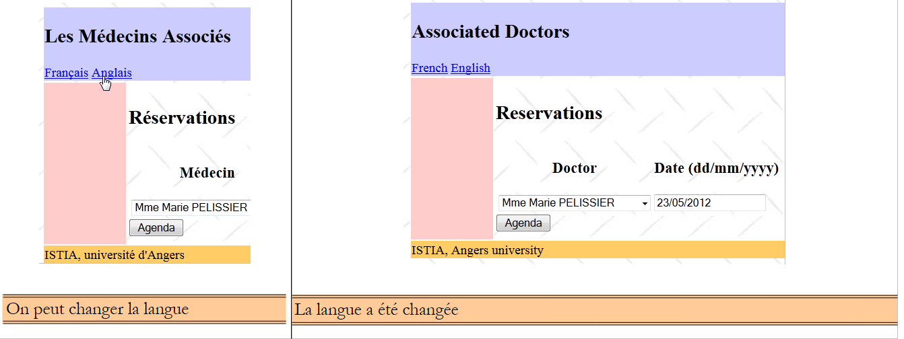 |
最后，还可能出现错误页面：
 |
这些不同的视图是通过该网络项目的以下页面生成的：
 |
- 在 [1] 中，页面 [basdepage, entete, layout] 负责所有视图的格式设置，
- 在 [2] 中，视图由 [layout.xhtml] 生成。
这里使用的是Facelets技术。该技术已在第2.11节中进行了描述。我们仅提供用于版面设计的XHTML页面的代码：
[entete.xhtml]
<?xml version='1.0' encoding='UTF-8' ?>
<!DOCTYPE html PUBLIC "-//W3C//DTD XHTML 1.0 Transitional//EN" "http://www.w3.org/TR/xhtml1/DTD/xhtml1-transitional.dtd">
<html xmlns="http://www.w3.org/1999/xhtml"
xmlns:h="http://java.sun.com/jsf/html"
xmlns:f="http://java.sun.com/jsf/core"
xmlns:ui="http://java.sun.com/jsf/facelets">
<body>
<h2><h:outputText value="#{msg['layout.entete']}"/></h2>
<div align="left">
<h:commandLink value="#{msg['layout.entete.langue1']}" actionListener="#{changeLocale.setFrenchLocale}"/>
<h:outputText value=" "/>
<h:commandLink value="#{msg['layout.entete.langue2']}" actionListener="#{changeLocale.setEnglishLocale}"/>
</div>
</body>
</html>
请注意第10-12行，其中包含两个用于切换应用程序语言的链接。
[basdepage.xhtml]
<?xml version='1.0' encoding='UTF-8' ?>
<!DOCTYPE html PUBLIC "-//W3C//DTD XHTML 1.0 Transitional//EN" "http://www.w3.org/TR/xhtml1/DTD/xhtml1-transitional.dtd">
<html xmlns="http://www.w3.org/1999/xhtml"
xmlns:h="http://java.sun.com/jsf/html">
<body>
<h:outputText value="#{msg['layout.basdepage']}"/>
</body>
</html>
[layout.xhtml]
<?xml version='1.0' encoding='UTF-8' ?>
<!DOCTYPE html PUBLIC "-//W3C//DTD XHTML 1.0 Transitional//EN" "http://www.w3.org/TR/xhtml1/DTD/xhtml1-transitional.dtd">
<html xmlns="http://www.w3.org/1999/xhtml"
xmlns:h="http://java.sun.com/jsf/html"
xmlns:f="http://java.sun.com/jsf/core"
xmlns:ui="http://java.sun.com/jsf/facelets">
<f:view locale="#{changeLocale.locale}">
<h:head>
<title>RdvMedecins</title>
<h:outputStylesheet library="css" name="styles.css"/>
</h:head>
<h:body style="background-image: url('${request.contextPath}/resources/images/standard.jpg');">
<h:form id="formulaire">
<table style="width: 1200px">
<tr>
<td colspan="2" bgcolor="#ccccff">
<ui:include src="entete.xhtml"/>
</td>
</tr>
<tr>
<td style="width: 100px; height: 200px" bgcolor="#ffcccc">
</td>
<td>
<ui:insert name="contenu" >
<h2>Contenu</h2>
</ui:insert>
</td>
</tr>
<tr bgcolor="#ffcc66">
<td colspan="2">
<ui:include src="basdepage.xhtml"/>
</td>
</tr>
</table>
</h:form>
</h:body>
</f:view>
</html>
此页面是页面 [index.xhtml] 的模板：
<?xml version='1.0' encoding='UTF-8' ?>
<!DOCTYPE html PUBLIC "-//W3C//DTD XHTML 1.0 Transitional//EN" "http://www.w3.org/TR/xhtml1/DTD/xhtml1-transitional.dtd">
<html xmlns="http://www.w3.org/1999/xhtml"
xmlns:h="http://java.sun.com/jsf/html"
xmlns:f="http://java.sun.com/jsf/core"
xmlns:ui="http://java.sun.com/jsf/facelets">
<ui:composition template="layout.xhtml">
<ui:define name="contenu">
<h:panelGroup rendered="#{form.form1Rendered}">
<ui:include src="form1.xhtml"/>
</h:panelGroup>
<h:panelGroup rendered="#{form.form2Rendered}">
<ui:include src="form2.xhtml"/>
</h:panelGroup>
<h:panelGroup rendered="#{form.form3Rendered}">
<ui:include src="form3.xhtml"/>
</h:panelGroup>
<h:panelGroup rendered="#{form.erreurRendered}">
<ui:include src="erreur.xhtml"/>
</h:panelGroup>
</ui:define>
</ui:composition>
</html>
第 8-21 行定义了 [layout.xhtml]（第 7 行）中名为“内容”（第 8 行）的区域。这是视图的中央区域：
 |
页面 [index.xhtml] 是该应用程序的唯一页面。 因此，页面之间不会进行导航。它显示的是四个页面之一：[form1.xhtml, form2.xhtml, form3.xhtml, erreur.xhtml]。该显示由表单 Bean 中的四个布尔值 [form1Rendered, form2Rendered, form3Rendered, erreurRendered] 控制，我们将在后面进行说明。
3.6.5. 项目的 Bean
 |
[utils]包中的类已介绍过：
3.6.5.1. Application Bean
[Application] Bean 如下所示：
package beans;
import java.util.ArrayList;
import java.util.HashMap;
import java.util.List;
import java.util.Map;
import javax.annotation.PostConstruct;
import javax.ejb.EJB;
import javax.enterprise.context.ApplicationScoped;
import javax.inject.Named;
import rdvmedecins.jpa.Client;
import rdvmedecins.jpa.Medecin;
import rdvmedecins.metier.service.IMetierLocal;
@Named(value = "application")
@ApplicationScoped
public class Application implements Serializable{
// 业务层
@EJB
private IMetierLocal metier;
// 缓存
private List<Medecin> medecins;
private List<Client> clients;
private Map<Long, Medecin> hMedecins = new HashMap<Long, Medecin>();
private Map<Long, Client> hClients = new HashMap<Long, Client>();
// 错误
private List<Erreur> erreurs = new ArrayList<Erreur>();
private Boolean erreur = false;
public Application() {
}
@PostConstruct
public void init() {
// 将医生和客户缓存
try {
medecins = metier.getAllMedecins();
clients = metier.getAllClients();
} catch (Throwable th) {
// 记录错误
erreur = true;
erreurs.add(new Erreur(th.getClass().getName(), th.getMessage()));
while (th.getCause() != null) {
th = th.getCause();
erreurs.add(new Erreur(th.getClass().getName(), th.getMessage()));
}
return;
}
// 验证列表
if (medecins.size() == 0) {
// 记录错误
erreur = true;
erreurs.add(new Erreur("", "La liste des médecins est vide"));
}
if (clients.size() == 0) {
// 记录错误
erreur = true;
erreurs.add(new Erreur("", "La liste des clients est vide"));
}
// 错误？
if (erreur) {
return;
}
// 字典
for (Medecin m : medecins) {
hMedecins.put(m.getId(), m);
}
for (Client c : clients) {
hClients.put(c.getId(), c);
}
}
// 获取器和设置器
...
}
- 第15-16行：类[Application]是一个应用程序范围的Bean。它在应用程序JSF的生命周期开始时创建一次，并可供所有用户的所有请求访问。通常，我们会在其中放置只读数据。 在此，我们将医生列表和客户列表存放在该Bean中。因此，我们假设这些数据不会频繁变更。XHTML页面可通过application名称访问该Bean，
- 第 20-21 行：Glassfish 的 EJB 容器将注入对 EJB 和 [Metier] 本地接口的引用。回顾一下应用程序的架构：
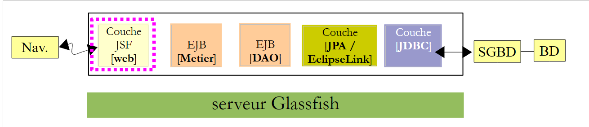 |
JSF 应用程序以及 EJB 和 [Metier] 将运行在同一个 JVM（Java 虚拟机）中。 因此，[JSF] 层将使用 EJB 的本地接口。在此处，应用程序 Bean 使用了 EJB 和 [Metier]。 即使并非如此，在 [métier] 层中找到相关引用也是正常的。因为这确实是一项可被所有用户的所有请求共享的信息，因此属于 Application 作用域的数据。
- 第 34-35 行：在实例化 [Application] 类后（存在 @PostConstruct 注解），会立即执行 init 方法，
- 第36-73行：该方法创建以下元素：第23行的医生列表、第24行的客户列表、第25行按ID索引的医生字典，以及第26行同类型的客户字典。可能发生错误，这些错误会被记录在第28行的列表中。
类 [Erreur] 如下所示：
package beans;
public class Erreur {
public Erreur() {
}
// 字段
private String classe;
private String message;
// 构造函数
public Erreur(String classe, String message){
this.setClasse(classe);
this.message=message;
}
// getter 和 setter
...
}
- 第 9 行：若抛出异常，则为异常类的名称；
- 第 10 行：错误消息。
3.6.5.2. Bean [Form]
其代码如下：
package beans;
...
@Named(value = "form")
@SessionScoped
public class Form implements Serializable {
public Form() {
}
// 应用程序 Bean
@Inject
private Application application;
// 模型
private Long idMedecin;
private Date jour = new Date();
private Boolean form1Rendered = true;
private Boolean form2Rendered = false;
private Boolean form3Rendered = false;
private Boolean erreurRendered = false;
private String form2Titre;
private String form3Titre;
private AgendaMedecinJour agendaMedecinJour;
private Long idCreneau;
private Medecin medecin;
private Client client;
private Long idClient;
private CreneauMedecinJour creneauChoisi;
private List<Erreur> erreurs;
@PostConstruct
private void init() {
// 初始化是否成功？
if (application.getErreur()) {
// 获取错误列表
erreurs = application.getErreurs();
// 显示错误视图
setForms(false, false, false, true);
}
}
// 显示视图
private void setForms(Boolean form1Rendered, Boolean form2Rendered, Boolean form3Rendered, Boolean erreurRendered) {
this.form1Rendered = form1Rendered;
this.form2Rendered = form2Rendered;
this.form3Rendered = form3Rendered;
this.erreurRendered = erreurRendered;
}
.................................................
}
- 第5-7行：类[Form]是一个名为form且作用域为session的Bean。需注意，此时该类必须可序列化。
- 第 13-14 行：form Bean 持有对 application Bean 的引用。该引用将由应用程序运行的 Servlet 容器注入（存在 @Inject 注解）。
- 第 17-31 行：页面模板 [form1.xhtml, form2.xhtml, form3.xhtml, erreur.xhtml]。这些页面的显示由第 19-22 行的布尔值控制。需要注意的是，默认情况下渲染的是页面 [form1.xhtml]，
- 第33-34行：类实例化后立即执行init方法（存在@PostConstruct注解），
- 第35-41行： init 方法用于确定应首先显示哪一页：通常是页面 [form1.xhtml]（第 19 行），除非应用程序初始化失败（第 36 行），在这种情况下将显示页面 [erreur.xhtml] （第40行）。
页面 [erreur.xhtml] 如下：
<?xml version='1.0' encoding='UTF-8' ?>
<!DOCTYPE html PUBLIC "-//W3C//DTD XHTML 1.0 Transitional//EN" "http://www.w3.org/TR/xhtml1/DTD/xhtml1-transitional.dtd">
<html xmlns="http://www.w3.org/1999/xhtml"
xmlns:h="http://java.sun.com/jsf/html"
xmlns:f="http://java.sun.com/jsf/core"
xmlns:ui="http://java.sun.com/jsf/facelets">
<body>
<h2><h:outputText value="#{msg['erreur.titre']}"/></h2>
<p>
<h:commandButton value="#{msg['erreur.accueil']}" actionListener="#{form.accueil()}"/>
</p>
<hr/>
<h:dataTable value="#{form.erreurs}" var="erreur" headerClass="erreursHeaders" columnClasses="erreurClasse,erreurMessage">
<h:column>
<f:facet name="header">
<h:outputText value="#{msg['erreur.classe']}"/>
</f:facet>
<h:outputText value="#{erreur.classe}"/>
</h:column>
<h:column>
<f:facet name="header">
<h:outputText value="#{msg['erreur.message']}"/>
</f:facet>
<h:outputText value="#{erreur.message}"/>
</h:column>
</h:dataTable>
</body>
</html>
它使用 <h:dataTable> 标签（第 14-27 行）来显示错误列表。生成的页面类似于以下内容：

接下来我们将定义应用程序生命周期的各个阶段。
3.6.6. 页面与模型之间的交互
3.6.6.1. 显示首页
如果一切正常，首先显示的页面是 [form1.xhtml]。显示效果如下：
|
页面 [form1.xhtml] 如下所示：
<?xml version='1.0' encoding='UTF-8' ?>
<!DOCTYPE html PUBLIC "-//W3C//DTD XHTML 1.0 Transitional//EN" "http://www.w3.org/TR/xhtml1/DTD/xhtml1-transitional.dtd">
<html xmlns="http://www.w3.org/1999/xhtml"
xmlns:h="http://java.sun.com/jsf/html"
xmlns:f="http://java.sun.com/jsf/core"
xmlns:ui="http://java.sun.com/jsf/facelets">
<body>
<h2><h:outputText value="#{msg['form1.titre']}"/></h2>
<h:panelGrid columns="3">
<h:panelGroup>
<div align="center"><h3><h:outputText value="#{msg['form1.medecin']}"/></h3></div>
</h:panelGroup>
<h:panelGroup>
<div align="center"><h3><h:outputText value="#{msg['form1.jour']}"/></h3></div>
</h:panelGroup>
<h:panelGroup/>
<h:selectOneMenu value="#{form.idMedecin}">
<f:selectItems value="#{form.medecins}" var="medecin" itemLabel="#{medecin.titre} #{medecin.prenom} #{medecin.nom}" itemValue="#{medecin.id}"/>
</h:selectOneMenu>
<h:inputText id="jour" value="#{form.jour}" required="true" requiredMessage="#{msg['form1.jour.required']}" converterMessage="#{msg['form1.jour.erreur']}">
<f:convertDateTime pattern="dd/MM/yyyy"/>
</h:inputText>
<h:message for="jour" styleClass="error"/>
</h:panelGrid>
<h:commandButton value="#{msg['form1.button.agenda']}" actionListener="#{form.getAgenda}"/>
</body>
</html>
该页面由以下模板生成：
@Named(value = "form")
@SessionScoped
public class Form implements Serializable {
// Application Bean
@Inject
private Application application;
// 模型
private Long idMedecin;
private Date jour = new Date();
// 医生列表
public List<Medecin> getMedecins() {
return application.getMedecins();
}
// 日程表
public void getAgenda() {
...
}
- 第 9 行字段负责读取和写入页面第 18 行列表中的值。 页面初次显示时，它会将下拉列表中的选定值固定下来。在初次显示时，idMedecin 等于 null，因此将选定第一位医生，
- 第13-15行的方法生成医生下拉列表的选项（页面第19行）。每个生成的选项将以（itemLabel）作为标签，显示医生的头衔、姓氏和名字，并以（itemValue）作为值，即医生的ID，
- 第10行的字段通过读写方式为页面第21行的输入字段提供数据。因此，初始显示时，显示的是当天日期，
- 第17-19行：方法getAgenda负责处理页面第26行按钮[Agenda]的点击事件。 由于没有导航（始终请求的是页面 [index.html]），因此通常会使用属性 actionListener 代替属性 action。 在这种情况下，在模板中调用的方法不会返回任何结果。
当点击按钮 [Agenda] 时，
- 数据已提交：在医生下拉列表中选定的值已保存至表单的idMedecin字段，在“日期”字段中选定的日期，
- 并调用表单中的方法 getAgenda。
方法 getAgenda 如下：
// 应用程序 Bean
@Inject
private Application application;
// 模板
private Long idMedecin;
private Date jour = new Date();
private Boolean form1Rendered = true;
private Boolean form2Rendered = false;
private Boolean form3Rendered = false;
private Boolean erreurRendered = false;
private String form2Titre;
private AgendaMedecinJour agendaMedecinJour;
private Medecin medecin;
private List<Erreur> erreurs;
// 日程表
public void getAgenda() {
try {
// 查询医生
medecin = application.gethMedecins().get(idMedecin);
// 表单标题 2
form2Titre = Messages.getMessage(null, "form2.titre", new Object[]{medecin.getTitre(), medecin.getPrenom(), medecin.getNom(), new SimpleDateFormat("dd MMM yyyy").format(jour)}).getSummary();
// 某一天的医生日程表
agendaMedecinJour = application.getMetier().getAgendaMedecinJour(medecin, jour);
// 显示表单2
setForms(false, true, false, false);
} catch (Throwable th) {
// 错误视图
prepareVueErreur(th);
}
}
// 准备vueErreur
private void prepareVueErreur(Throwable th) {
// 创建错误列表
erreurs = new ArrayList<Erreur>();
erreurs.add(new Erreur(th.getClass().getName(), th.getMessage()));
while (th.getCause() != null) {
th = th.getCause();
erreurs.add(new Erreur(th.getClass().getName(), th.getMessage()));
}
// 显示错误视图
setForms(false, false, false, true);
}
回顾一下方法 getAgenda 应显示的内容：
 |
- 第 21 行：从医生字典中检索选定的医生，该医生已存储在 application Bean 中。为此，使用其 ID（该 ID 已通过 POST 方式发送至 idMedecin），
- 第23行：准备待显示的页面[form2.xhtml]的标题。该消息从消息文件中提取，以便进行国际化处理。此技术已在第2.8.5.7节（第135页）中描述。
- 第25行：调用[métier]层，计算所选医生在所选日期的日程安排，
- 第27行：显示[form2.xhtml]，
- 第28行：若发生异常，则构建错误列表（第37-42行）并显示页面[erreur.xhtml]（第44行）。
3.6.6.2. 显示医生的日程表
页面 [form2.xhtml] 对应以下视图：
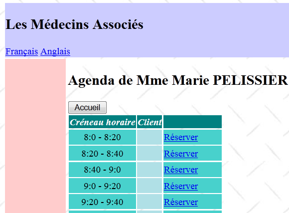 |
页面 [form2.xhtml] 的代码如下：
<?xml version='1.0' encoding='UTF-8' ?>
<!DOCTYPE html PUBLIC "-//W3C//DTD XHTML 1.0 Transitional//EN" "http://www.w3.org/TR/xhtml1/DTD/xhtml1-transitional.dtd">
<html xmlns="http://www.w3.org/1999/xhtml"
xmlns:h="http://java.sun.com/jsf/html"
xmlns:f="http://java.sun.com/jsf/core"
xmlns:ui="http://java.sun.com/jsf/facelets"
xmlns:c="http://java.sun.com/jsp/jstl/core">
<body>
<h2><h:outputText value="#{form.form2Titre}"/></h2>
<h:commandButton value="#{msg['form2.accueil']}" action="#{form.accueil}" />
<h:dataTable value="#{form.agendaMedecinJour.creneauxMedecinJour}" var="creneauMedecinJour" headerClass="reservationsHeaders" columnClasses="creneau,client,action">
<h:column>
<f:facet name="header">
<h:outputText value="#{msg['form2.creneauHoraire']}"/>
</f:facet>
<h:outputText value="#{creneauMedecinJour.creneau.hdebut}:#{creneauMedecinJour.creneau.mdebut} - #{creneauMedecinJour.creneau.hfin}:#{creneauMedecinJour.creneau.mfin}" />
</h:column>
<h:column>
<f:facet name="header">
<h:outputText value="#{msg['form2.client']}"/>
</f:facet>
<c:if test="#{creneauMedecinJour.rv==null}">
<h:outputText value=""/>
<c:otherwise>
<h:outputText value="#{creneauMedecinJour.rv.client.titre} #{creneauMedecinJour.rv.client.prenom} #{creneauMedecinJour.rv.client.nom}"/>
</c:otherwise>
</c:if>
</h:column>
<h:column>
<f:facet name="header"/>
<h:commandLink action="#{form.action()}" value="#{creneauMedecinJour.rv==null ? msg['form2.reserver'] : msg['form2.supprimer']}">
<f:setPropertyActionListener value="#{creneauMedecinJour.creneau.id}" target="#{form.idCreneau}"/>
</h:commandLink>
</h:column>
</h:dataTable>
</body>
</html>
需要提醒的是，方法 getAgenda 在模型中初始化了两个字段：
// 模板
private String form2Titre;
private AgendaMedecinJour agendaMedecinJour;
这两个字段为页面 [form2.xhtml] 提供数据：
- 第 10 行，即页面标题，
- 第 12 行：医生的日程表通过一个三列的 <h:dataTable> 标签显示，
- 第13-18行：第一列显示时间段，
- 第19-30行：第二列显示已预约该时段的客户姓名（若无预约则留空）。此处使用第7行引用的JSTL Core库中的标签，
- 第30-35行：第三列显示链接[Réserver]（若时段空闲），或链接[Supprimer]（若时段已预订）。
第三列的链接关联到以下模板：
// 模板
private Long idCreneau;
// 对 RV 执行操作
public void action() {
...
}
- 当用户点击“预订/删除”链接（第32行）时，将调用方法 action。请注意，此处使用了属性 action。该属性指向的方法应具有 String action() 的签名，因为该方法必须返回一个导航键。 但此处的签名却是 void action()。这并未引发错误，因此可以推测在此情况下不存在导航操作。这正是预期效果。若将 actionListener 替换为 action 则会导致功能失效，
- 第 2 行中的字段 idCreneau 将获取被点击链接的时间段 ID（页面第 33 行）。
3.6.6.3. 删除预约
让我们来分析处理删除预约的代码。这对应于以下视图序列：
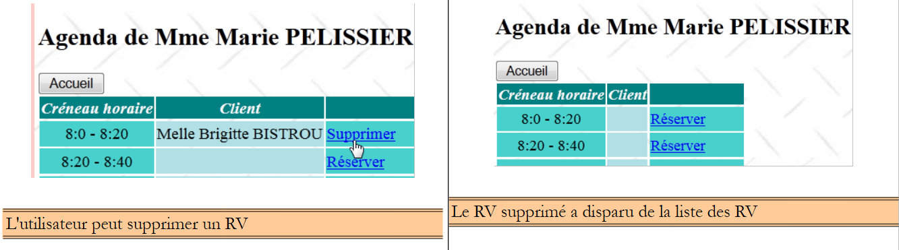 |
与该操作相关的代码如下：
// Application bean
@Inject
private Application application;
// 模板
private Boolean form1Rendered = true;
private Boolean form2Rendered = false;
private Boolean form3Rendered = false;
private Boolean erreurRendered = false;
private AgendaMedecinJour agendaMedecinJour;
private Long idCreneau;
private CreneauMedecinJour creneauChoisi;
private List<Erreur> erreurs;
// 对 RV 采取操作
public void action() {
// 正在日历中查找空档
int i = 0;
Boolean trouvé = false;
while (!trouvé && i < agendaMedecinJour.getCreneauxMedecinJour().length) {
if (agendaMedecinJour.getCreneauxMedecinJour()[i].getCreneau().getId() == idCreneau) {
trouvé = true;
} else {
i++;
}
}
// 找到了吗？
if (!trouvé) {
// 真奇怪——重新显示 form2
setForms(false, true, false, false);
return;
}
// 找到了
creneauChoisi = agendaMedecinJour.getCreneauxMedecinJour()[i];
// 根据所需操作
if (creneauChoisi.getRv() == null) {
reserver();
} else {
supprimer();
}
}
// 预约
public void reserver() {
...
}
public void supprimer() {
try {
// 删除预约
application.getMetier().supprimerRv(creneauChoisi.getRv());
// 更新日程表
agendaMedecinJour = application.getMetier().getAgendaMedecinJour(medecin, jour);
// 显示表单2
setForms(false, true, false, false);
} catch (Throwable th) {
// 错误视图
prepareVueErreur(th);
}
}
- 第16行：当方法action启动时，所选时段的ID已通过idCreneau（第11行）传递进来，
- 第18-26行：试图根据id（第21行）中的信息检索该时间段。 在第10行的当前日程表 agendaMedecinJour 中进行查找。通常应能找到该时段。若未找到，则不执行任何操作（第28-32行），
- 第34行：若找到目标时段，则获取其引用并存储在第12行，
- 第36行：检查所选时段是否已有预约。如有，则将其删除（第39行）；否则，则预留一个（第37行），
- 第51行：删除所选时段内的预约。此操作由[métier]层负责，
- 第53行：向[métier]层请求医生的最新日程表。当然，此时会发现预约减少了一个。但由于该应用是多用户系统，因此可能看到其他用户所做的修改，
- 第55行：重新显示页面[form2.xhtml]，
- 第 58 行：由于调用了 [métier] 层，可能会引发异常。此时，将异常堆栈记录在第 13 行的错误列表中，并通过视图 [erreur.xhtml] 显示这些异常。
3.6.6.4. 预约
预约流程如下：
 |
此操作涉及的模板如下：
// 模板
private Date jour = new Date();
private Boolean form1Rendered = true;
private Boolean form2Rendered = false;
private Boolean form3Rendered = false;
private Boolean erreurRendered = false;
private String form3Titre;
private AgendaMedecinJour agendaMedecinJour;
private Medecin medecin;
private CreneauMedecinJour creneauChoisi;
private List<Erreur> erreurs;
// 对 RV 执行操作
public void action() {
...
// 已找到
creneauChoisi = agendaMedecinJour.getCreneauxMedecinJour()[i];
// 根据所需操作
if (creneauChoisi.getRv() == null) {
reserver();
} else {
supprimer();
}
}
// 预订
public void reserver() {
try {
// 表单标题 3
form3Titre = Messages.getMessage(null, "form3.titre", new Object[]{medecin.getTitre(), medecin.getPrenom(), medecin.getNom(), new SimpleDateFormat("dd MMM yyyy").format(jour),
creneauChoisi.getCreneau().getHdebut(), creneauChoisi.getCreneau().getMdebut(), creneauChoisi.getCreneau().getHfin(), creneauChoisi.getCreneau().getMfin()}).getSummary();
// 下拉列表中选定的客户
idClient=null;
// 显示表单 3
setForms(false, false, true, false);
} catch (Throwable th) {
// 显示错误页面
prepareVueErreur(th);
}
}
- 第14行：如果所选时段没有预约，则视为预订，
- 第30行：采用与[form2.xhtml]页面标题相同的技术，生成[form3.xhtml]页面的标题，
- 第34行：此表单中有一个下拉列表，其值由idClient提供。将该字段的值设为null，以不选择任何人，
- 第 36 行：显示页面 [form3.xhtml]，
- 第39行：若发生异常，则显示错误页面。
页面 [form3.xhtml] 如下所示：
<?xml version='1.0' encoding='UTF-8' ?>
<!DOCTYPE html PUBLIC "-//W3C//DTD XHTML 1.0 Transitional//EN" "http://www.w3.org/TR/xhtml1/DTD/xhtml1-transitional.dtd">
<html xmlns="http://www.w3.org/1999/xhtml"
xmlns:h="http://java.sun.com/jsf/html"
xmlns:f="http://java.sun.com/jsf/core"
xmlns:ui="http://java.sun.com/jsf/facelets">
<body>
<h2><h:outputText value="#{form.form3Titre}"/></h2>
<h:panelGrid columns="2">
<h:outputText value="#{msg['form3.client']}"/>
<h:selectOneMenu value="#{form.idClient}">
<f:selectItems value="#{form.clients}" var="client" itemLabel="#{client.titre} #{client.prenom} #{client.nom}" itemValue="#{client.id}"/>
</h:selectOneMenu>
<h:panelGroup>
<h:commandButton value="#{msg['form3.valider']}" actionListener="#{form.validerRv}" />
<h:commandButton value="#{msg['form3.annuler']}" actionListener="#{form.annulerRv}"/>
</h:panelGroup>
</h:panelGrid>
</body>
</html>
该页面由以下模板生成：
// 应用程序 Bean
@Inject
private Application application;
// 模板
private Long idClient;
// 客户列表
public List<Client> getClients() {
return application.getClients();
}
- 第 6 行：客户编号为页面第 12 行客户下拉列表的 value 属性提供数据。它确定了下拉列表中选中的项，
- 第9-11行：方法getClients为下拉列表（第13行）提供内容。 每个选项的标签（itemLabel）是客户的[Titre Prénom Nom]，关联的值（itemValue）是客户的ID。因此，将提交的就是该值。
3.6.6.5. 确认预约
预约确认遵循以下流程：
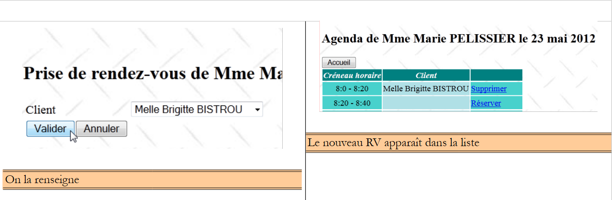 |
对应点击按钮 [Valider]：
<h:commandButton value="#{msg['form3.valider']}" actionListener="#{form.validerRv}" />
因此，将由方法 [Form].validerRv 处理此事件。其代码如下：
// 应用程序 Bean
@Inject
private Application application;
// 模型
private Date jour = new Date();
private Boolean form1Rendered = true;
private Boolean form2Rendered = false;
private Boolean form3Rendered = false;
private Boolean erreurRendered = false;
private Long idCreneau;
private Long idClient;
private List<Erreur> erreurs;
// 预约验证
public void validerRv() {
try {
// 获取所选时间段的实例
Creneau creneau = application.getMetier().getCreneauById(idCreneau);
// 添加预约
application.getMetier().ajouterRv(jour, creneau, application.gethClients().get(idClient));
// 更新日程表
agendaMedecinJour = application.getMetier().getAgendaMedecinJour(medecin, jour);
// 显示 form2
setForms(false, true, false, false);
} catch (Throwable th) {
// 错误视图
prepareVueErreur(th);
}
}
- 第12行：在方法validerRv执行之前，字段idClient已接收用户选定的客户ID，
- 第19行：基于前一步骤中存储的时间段ID（该Bean为会话作用域），向[métier]层请求该时间段本身的引用，
- 第21行：请求[métier]层为选定的日期（day）、时段（slot）和客户（idClient）添加一个预约，
- 第23行：请求[métier]层刷新医生的日程表。此时将显示已添加的预约以及其他应用用户可能做出的所有修改，
- 第25行：重新显示日程表[form2.xhtml]，
- 第28行：若发生错误，则显示错误页面。
3.6.6.6. 取消预约
这对应以下流程：
 |
页面 [form3.xhtml] 中的按钮 [Annuler] 如下所示：
<h:commandButton value="#{msg['form3.annuler']}" actionListener="#{form.annulerRv}"/>
因此将调用方法 [Form].annulerRv：
// 取消预约
public void annulerRv() {
// 显示表单2
setForms(false, true, false, false);
}
3.6.6.7. 返回首页
还有一项操作需要查看，即以下序列的操作：
 |
页面 [form2.xhtml] 中按钮 [Accueil] 的代码如下：
<h:commandButton value="#{msg['form2.accueil']}" action="#{form.accueil}" />
[Form].accueil 方法如下：
public void accueil() {
// 显示主页
setForms(true, false, false, false);
}
3.7. 结论
我们构建了以下应用程序：
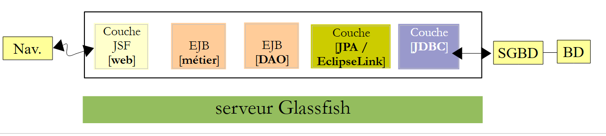 |
我们更关注应用程序的功能，而非其用户界面。用户界面将通过使用组件库 PrimeFaces 得到改进。 我们构建了一个基础但能体现分层Java架构的应用程序，该架构利用了EE组件库。该应用程序可通过多种方式进行优化：
- 需要身份验证。并非所有人都被授权添加/删除预约；
- 在查找有空档的日期时，应能前后滚动浏览日历，
- 应能查询某位医生所有有空档日期的列表。因为如果是眼科医生，其预约通常需要提前六个月预订，
- ……
3.8. 使用Eclipse进行测试
3.8.1. [DAO]层
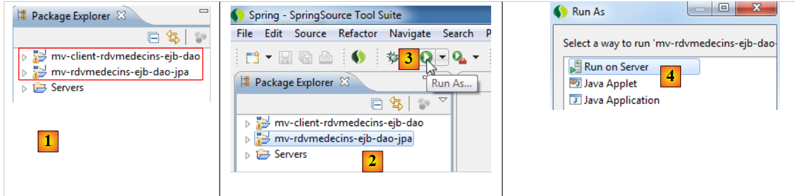 |
- 在 [1] 中，导入来自 [DAO] 层的项目 EJB 及其客户，
- 在 [2] 中，选择来自 [DAO] 层级的项目 EJB 并将其执行为 [3]，
- 在 [4] 中，将其在服务器上执行，
 |
- 在 [5] 中，仅提供 Glassfish 服务器，因为它是唯一拥有 EJB 容器的服务器，
- 在 [6] 中，已部署了 EJB 模块，
 |
- 在 [7] 中，显示日志：
这些就是我们在 NetBeans 中看到的日志。
 |
- 在 [7A] [7B] 中执行客户端测试 JUnit，
 |
- 在 [8] 中，测试成功，
- 在 [9] 中，控制台日志。
 |
在 [10] 中，卸载应用程序 EJB。
3.8.2. [métier]层
 |
- 在 [1] 中，导入 [métier] 层面的四个 Maven 项目，
- 在 [2] 中，选择企业项目并将其部署到 [3]，在 Glassfish 服务器 [4] [5] 上，
 |
- 在 [6] 中，企业项目已部署到 Glassfish 上，
 |
- 在 [7]，查看 Glassfish 日志，
第3行，我们记下EJB [Metier]的便携名称，并将其粘贴到该EJB的控制台客户端中：
public class ClientRdvMedecinsMetier {
// EJB 的远程接口名称 [Metier]
private static String IDaoRemoteName = "java:global/mv-rdvmedecins-metier-dao-ear/mv-rdvmedecins-ejb-metier-1.0-SNAPSHOT/Metier!rdvmedecins.metier.service.IMetierRemote";
// 今日日期
private static Date jour = new Date();
 |
- 在 [8] 中，运行控制台客户端，
- 在 [9] 中，查看其日志。
 |
- 在 [10] 中，卸载企业应用程序；
3.8.3. [web]层
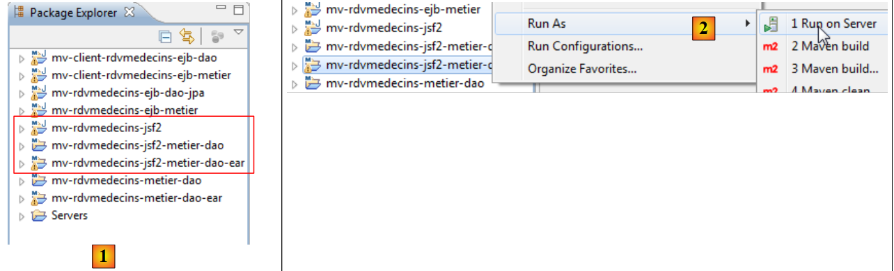 |
- 在 [1] 中，导入 [web] 层面的三个 Maven 项目。后缀为 ear 的项目即需部署到 Glassfish 上的企业项目，
- 在 [2] 中，我们运行它，
 |
- 部署到 Glassfish 服务器上 [3]，
- 在 [4] 中，企业应用程序已成功部署，
 |
- 在 [5] 阶段，通过 Eclipse 内置浏览器请求应用程序的 URL。